flowchart LR
A[Seed]
B[Noise Generation]
C[Height Map]
D[Terrain Mesh]
E[Texturing]
F[Final Landscape]
A --> B --> C --> D --> E --> F
Prozedurale Grafik-Generierung - Vom Seed zur Terrain-Landschaft
Gruppe 4: Tobias Gschnell, Julian Peterhansl, Andrei Radulescu
Prozedurale GPU-Grafik ersetzt gespeicherte Inhalte durch mathematische Regeln. Am Beispiel eines von Minecraft inspirierten Terrains zeigen wir, wie aus einem Seed über Noise-Funktionen, die Shader-Pipeline und prozedurale Texturierung in Echtzeit eine sichtbare Welt entsteht.
1 Einführung
1.1 Was ist prozedurale Generierung?
Digitale Welten wirken heute oft nahezu unbegrenzt. Würde jede Oberfläche, jede Textur und jede Geländeform vollständig von Hand erstellt und als fertige Datei gespeichert, würden Speicherbedarf, Ladezeiten und Produktionsaufwand schnell unpraktikabel werden.
Ein anschauliches Beispiel dafür ist Minecraft. Die Spielwelt ist in sogenannte Chunks unterteilt. Ein Chunk umfasst in der aktuellen Java Edition \(16 × 384 × 16\) Blöcke. Eine maximale, (stabil) spielbare Welt von ungefähr \(30 Millionen × 30 Millionen\) Blöcken mit 384 Höhenstufen ergäbe etwa \(3{,}5 \cdot 10^{17}\) mögliche Blockpositionen. Selbst bei nur 1 Byte pro Position wären das ungefähr 350 000 Terabyte, in der Realität viel viel mehr.
1.2 Unterschied zu klassischen Texturen
Die zentrale Idee prozeduraler Generierung ist deshalb, nicht die gesamte Welt selbst zu speichern, sondern Regeln, Parameter und Zufallsinitialisierung. Aus einem Seed und mathematischen Funktionen entstehen reproduzierbare Strukturen. Dieselbe Eingabe erzeugt wieder dieselbe Landschaft, ohne dass jede einzelne Stelle der Welt vorher gespeichert werden muss.
Historisch spielt diese Idee in der Computergrafik seit den 1980er Jahren eine wichtige Rolle. Ken Perlin beschrieb 1985 mit „An Image Synthesizer“ ein Verfahren, das natürliche Strukturen wie Wolken, Feuer, Marmor oder Landschaften durch mathematisch erzeugten Noise modellieren konnte. Der wichtige Unterschied zu reinem Zufall ist dabei Kohärenz. Benachbarte Werte sollen nicht völlig unabhängig sein, sondern glatte Übergänge bilden. Erst dadurch entstehen Muster, die für natürliche Formen plausibel wirken.
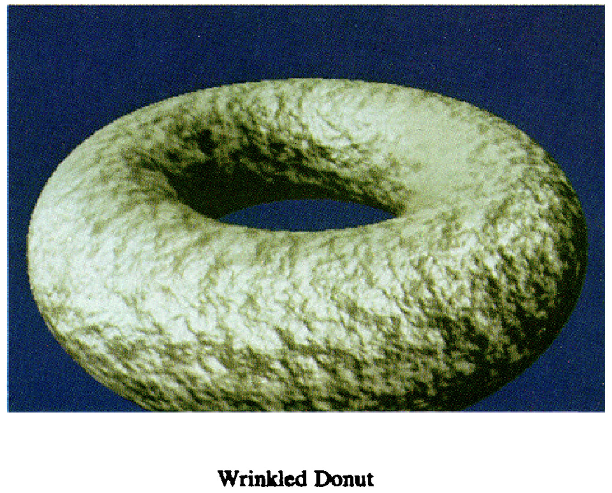
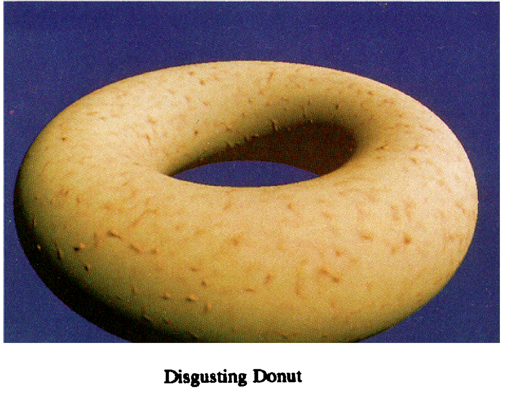
1.3 Verwandte Methoden im Vergleich
Prozedurale Generierung mit Shadern ist nicht die einzige Methode, um komplexe grafische Inhalte zu erzeugen. Sie steht zwischen mehreren verwandten Ansätzen, die jeweils andere Stärken und Schwächen haben. Der zentrale Unterschied liegt darin, ob Inhalte vorher gespeichert, durch Regeln erzeugt, aus Beispielen zusammengesetzt, durch Simulation berechnet oder aus Daten gelernt werden.
| Methode | Grundidee | Vorteile | Nachteile |
|---|---|---|---|
| Assetbasierte Erstellung | Inhalte werden manuell erstellt und gespeichert | Hohe gestalterische Kontrolle, gezielte Qualität | Hoher Speicherbedarf, hoher Produktionsaufwand, begrenzte Variation |
| Noise-basierte Verfahren | Mathematische Funktionen erzeugen strukturierte Zufälligkeit | Wenig Speicher, reproduzierbar, gut parametrisierbar | Kann künstlich wirken |
| Regelbasierte Verfahren (a) | Algorithmen erzeugen komplexe Strukturen, oft fraktal-basiert | Wie oben, sehr komplexe Formen erzeugbar | Regelentwurf aufwendig, weniger geeignet für freie Terrainformen |
| Constraintbasierte Verfahren (b) | Bausteine werden nach Nachbarschaftsregeln zusammengesetzt | Erzeugt konsistenten Style, gut für Muster und Module | Kann Konflikte erzeugen, globale Kontrolle schwierig |
| Simulationsbasierte Verfahren (c,d) | Physikalische Prozesse wie Erosion, Wasserfluss oder Sedimenttransport formen das Ergebnis | Hohe natürliche Plausibilität | Rechenintensiv, oft schwer in Echtzeit |
| Datengetriebene Verfahren | Reale Daten oder gelernte Modelle erzeugen Inhalte | Sehr realistische Ergebnisse möglich | Benötigt Daten, Modelle oder große Eingaben |
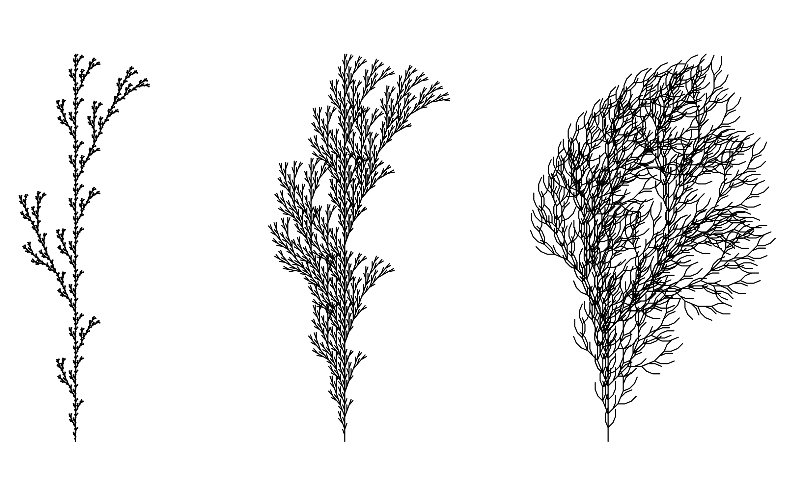
a) Algorithmische Pflanzengenerierung

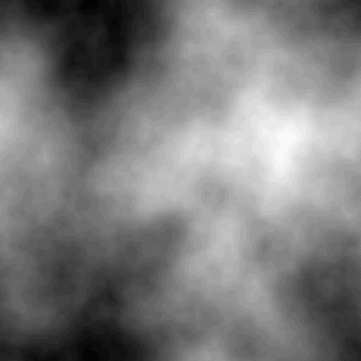
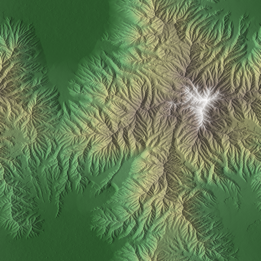
2 Hintergrund
2.1 Vom Seed zum gerenderten Terrain
Am Anfang der prozeduralen Terrain-Generierungsteht noch keine Geometrie, sondern ein Seed und mehrere Parameter. Diese Eingaben werden durch eine Noise Funktion ausgewertet. Das Ergebnis ist eine Noise Map, also ein zweidimensionales Feld numerischer Werte. Eine solche Map ist noch keine Landschaft. Sie enthält weder Vertices noch Dreiecke noch Blöcke. Erst durch eine Interpretation werden aus den Zahlen Höhenwerte, Dichtewerte, Materialregeln oder Texturinformationen. Für die Darstellung muss diese Datenrepräsentation anschließend in die Rendering Pipeline überführt werden.
Für unsere Veranschaulichung ist wichtig, dass dieselbe Noise Map unterschiedlich interpretiert werden kann. Bei einer CPU Heightmap wird aus den Noise Werten zuerst ein fertiges Mesh erzeugt. Die Höhen stehen dann bereits im Vertex Buffer, bevor die GPU die Geometrie rendert. Bei einer Voxel Darstellung werden aus denselben Höhenwerten diskrete Block Säulen aufgebaut. Beim Vertex Displacement wird dagegen nur ein flaches Grid an die GPU übergeben. Die eigentliche Höhenverschiebung erfolgt erst im Vertex Shader. Der Fragment Shader kann anschließend die Oberfläche nach Regeln einfärben, zum Beispiel abhängig von Höhe, Steigung oder Wasserstand.
Seed Parameter
→
Noise Map 2D Wertefeld
→
Interpretation Höhe, Blöcke oder Textur
→
CPU Heightmap
Die Noise Werte werden auf der CPU als Höhen interpretiert. Daraus entsteht ein fertiges Dreiecksmesh. Die Höhen stehen bereits im Vertex Buffer, bevor die GPU rendert.
Noise Map → CPU erzeugt Mesh → Vertex Buffer → Vertex Shader → Fragment Shader → Framebuffer
2.2 Parallelisierung durch Compute Shader
Compute Shader sind aus dem General-Purpose-GPU Ansatz entstanden. Davor mussten GPU-Berechnungen außerhalb klassischer Grafikaufgaben oft indirekt über Texturen und Fragment Shader formuliert werden.
Ab etwa 2006 wurde GPU-Computing mit CUDA allgemeiner programmierbar, 2008 folgte OpenCL als plattformübergreifender Standard. In Grafik-APIs wurden Compute Shader später direkt integriert, unter anderem mit DirectCompute in Direct3D 11 und mit OpenGL 4.3 im Jahr 2012.
Das Grundproblem, das Compute Shader lösen, ist die Ausführung vieler gleichartiger Berechnungen auf großen Datenfeldern. Statt einzelne Werte nacheinander auf der CPU zu berechnen, werden viele Shader Invocations parallel auf der GPU gestartet.
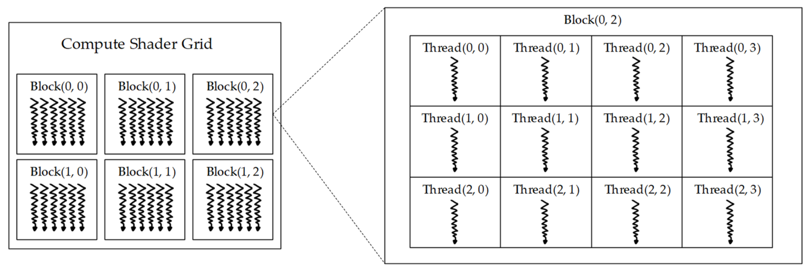
Die Grafik zeigt das Grundprinzip: Links sieht man ein Grid aus Blocks, rechts einen vergrößerten einzelnen Block mit seinen Threads. Jeder Thread führt dasselbe kleine Programm für einen anderen Datenpunkt aus.
Für unseren Anwendungsfall könnte man das so implementieren, dass jeder Thread genau einen Wert der Noise Map berechnet. Ein Block verarbeitet also einen kleinen Ausschnitt der Map, viele Blocks zusammen könnten das vollständige Höhenfeld parallel auf der GPU erzeugen. Diese Daten könnten anschließend ohne Rücktransfer zur CPU direkt im Vertex Shader als Heightmap genutzt und danach im Fragment Shader eingefärbt werden.
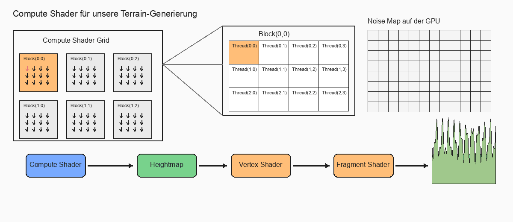
Eine Noise Map lässt sich problemlos auf der CPU berechnen, und der Aufwand für WebGPU, Speicherbindung und Synchronisation wäre in unserem Fall nicht notwendig. Compute Shader lohnen sich vor allem bei großen oder häufig aktualisierten Datenfeldern, etwa bei vielen Chunks, Partikeln oder Simulationen. Im Vergleich zu CUDA sind WebGPU-Compute Shader weniger spezialisiert und stärker auf sichere, portable Browserausführung ausgelegt, während CUDA eine reifere und hardwarenahe Plattform für Hochleistungsrechnen für NVIDIA GPUs ist.
Das gleiche Prinzip findet sich jedoch auch außerhalb der Computergrafik:
- Beim KI-Training werden große Teile neuronaler Netze als Matrixoperationen formuliert, die auf GPUs stark parallelisiert werden können.
- Bei Blockchain-Anwendungen können z.B. sehr rechenaufwändige Proof-Berechnungen über spezialisierte WebGPU-Compute Shader browserbasiert beschleunugt werden.
3 Interaktive prozedurale Terrain-Generierung
Dieses Kapitel zeigt anhand einer interaktiven Demo, wie prozedural eine Landschaft entsteht. Ausgangspunkt ist dabei keine gespeicherte Textur, sondern ein Seed, Parameter und eine mathematische Noise-Funktion. Aus diesen Eingaben wird zunächst ein zweidimensionales skalares Wertefeld berechnet, durch dessen anschließende Interpretation entsteht ein Terrain.
In der Computergrafik bezeichnet Noise-Generation ein Verfahren zur Erzeugung i. d. R. pseudozufälliger, aber strukturierter Werteverteilungen:
\[ n: \mathbb{R}^2 \rightarrow [0,1] \]
Für jede Position im zweidimensionalen Raum liefert die Funktion einen normalisierten Wert.
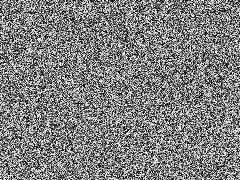
Reiner Zufall, wie im Beispiel von White Noise, erzeugt für jeden Bildpunkt weitgehend unabhängige Werte. Für natürliche Landschaften ist das ungeeignet, weil dadurch keine zusammenhängenden, realistischen Formen entstehen.
Für Terrain-Generierung wird stattdessen kohärenter Noise benötigt, was bedeutet, dass nahe beieinanderliegende Positionen meist ähnliche Werte besitzen sollten. Im Folgenden werden Noise Funktionen eingeführt, die weiterhin auf pseudozufälligen Werten beruhen, diese aber so interpolieren oder kombinieren, dass räumliche Kontinuität entsteht.
3.1 Relevante Noise-Verfahren für Terrain-Generierung
3.1.1 Value Noise
Value Noise ist eines der einfachsten Verfahren und dient als Grundlage vieler komplexerer Noise Typen. Dabei werden zunächst diskrete Gitterpunkte mit mit pseudozufälligen Werten belegt. Für eine Position zwischen diesen Gitterpunkten wird der Wert über Interpolation aus den umgebenden Gitterwerten berechnet.
Eine vereinfachte eindimensionale Darstellung lautet:
\[ v(x) = (1 - t) \cdot a + t \cdot b \]
Dabei sind (a) und (b) die Zufallswerte an zwei benachbarten Gitterpunkten und (t) ist die normierte Position zwischen ihnen.
In zwei Dimensionen erfolgt die Interpolation entsprechend zwischen vier benachbarten Gitterpunkten.
Für natürlichere Übergänge wird (t) häufig nicht direkt verwendet, sondern zuerst durch eine Glättungsfunktion transformiert, zum Beispiel durch die “Hermite curve”: \[ s(t) = t^2(3 - 2t) \] Damit ändern sich die Werte an den Gittergrenzen weniger abrupt. Das Ergebnis wirkt weicher und räumlich zusammenhängender als reiner Zufall. Für Terrain Generierung ist Value Noise deshalb anschaulich, aber nur begrenzt realistisch. Bei niedriger Auflösung können sichtbare Gitterstrukturen entstehen. In der Praxis wird Value Noise daher häufig als einfacher Baustein für prozedurale Texturen, Masken, Shader Effekte oder generative Kunst genutzt. Für komplexere Landschaften werden oft weiterentwickelte Verfahren wie Perlin Noise oder Kombinationen mehrerer Noise Ebenen eingesetzt.
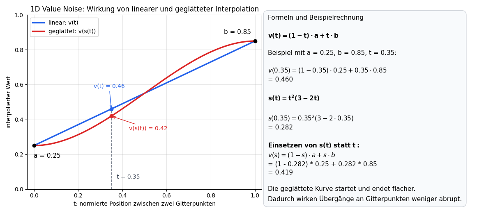
Code-Erklärung
Drei Schritte: 1. Reproduzierbare Zufallswerte erzeugen 2. Werte auf einem groben Gitter speichern 3. Für jedes Canvas-Pixel einen interpolierten Grauwert berechnen
y0 = Math.floor(gy)
x1 = Math.min(x0 + 1, gridWidth - 1)
y1 = Math.min(y0 + 1, gridHeight - 1)
tx = gx - x0
ty = gy - y0
tx = fadeValue(tx)
ty = fadeValue(ty)
v00 = grid[y0][x0]
v10 = grid[y0][x1]
v01 = grid[y1][x0]
v11 = grid[y1][x1]
ix0 = lerpValue(v00, v10, tx)
ix1 = lerpValue(v01, v11, tx)
value = lerpValue(ix0, ix1, ty)Die Funktion fadeValue(t) verwendet die Glättungsfunktion
\[ s(t) = t^2(3 - 2t) \]
Dadurch werden die lokalen Koordinaten tx und ty vor der Interpolation geglättet. Die Übergänge zwischen benachbarten Gitterzellen wirken dadurch weicher.
Die Funktion lerpValue(a, b, t) berechnet eine lineare Interpolation zwischen zwei Werten:
\[ \operatorname{lerp}(a,b,t) = a(1-t) + bt \]
In sampleValueNoise wird diese Interpolation in zwei Dimensionen angewendet. Zuerst werden die oberen und unteren Gitterwerte entlang der x-Richtung interpoliert. Danach werden die beiden Zwischenergebnisse entlang der y-Richtung interpoliert. Dieses Verfahren entspricht bilinearer Interpolation.
function renderValueNoise(seed) {
const cellSize = 32
const gridWidth = Math.ceil(width / cellSize) + 1
const gridHeight = Math.ceil(height / cellSize) + 1
const rng = mulberry32Value(seed)
const grid = buildValueGrid(gridWidth, gridHeight, rng)
for (let y = 0; y < height; y++) {
for (let x = 0; x < width; x++) {
const value = sampleValueNoise(x, y, grid, cellSize)
const gray = Math.floor(value * 255)
// rgba(gray, gray, gray, 255)
}
}
}Der Parameter cellSize bestimmt die räumliche Auflösung des Zufallsgitters. Größere Werte erzeugen gröbere Strukturen, kleinere Werte feinere Muster.
Die Funktion parseValueSeed stellt sicher, dass nur ganze numerische Seeds verwendet werden. Der Ausdruck seed >>> 0 wandelt den Seed in eine vorzeichenlose 32-Bit-Zahl um.
Gib einen numerischen Seed ein, um eine reproduzierbare Value Noise Map zu erzeugen.
3.1.2 Perlin Noise
Perlin Noise ist ein gradientenbasiertes Noise Verfahren und wurde von Ken Perlin als Methode zur Erzeugung natürlich wirkender prozeduraler Texturen eingeführt. Im Unterschied zu Value Noise werden an den Gitterpunkten keine direkten Zufallswerte gespeichert. Stattdessen erhält jeder Gitterpunkt einen pseudozufälligen Gradientenvektor. Für einen Punkt \((p = (x,y))\) innerhalb einer Perlin-Gitterzelle wird zunächst der Abstandsvektor von jeder Zellenecke zu diesem Punkt bestimmt. Anschließend wird jeweils das Skalarprodukt aus Gradientenvektor und Abstandsvektor berechnet:
\[ d_{ij} = g_{ij} \cdot (p - p_{ij}) \]
Dabei ist \(g_i\) der Gradientenvektor an einer Gitterecke und \(p_i\) die Position dieser Gitterecke. Das Skalarprodukt beschreibt, wie stark der Abstandsvektor in Richtung des jeweiligen Gradienten zeigt. Die vier berechneten Werte werden danach geglättet und bilinear interpoliert.
Für die Glättung wird in der Demo die von Perlin später eingeführte quintische Fade Funktion verwendet, die dafür sorgt, dass Übergänge zwischen Zellen glatter verlaufen: \[ s(t) = 6t^5 - 15t^4 + 10t^3 \]
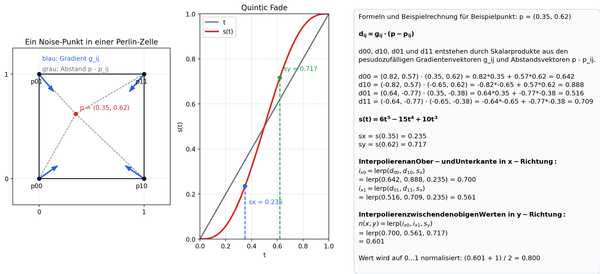
Der Parameter “Frequenz” steuert die räumliche Skalierung des Noise. Eine niedrige Frequenz erzeugt große, weiche Strukturen. Eine höhere Frequenz erzeugt kleinere und dichtere Muster.
Perlin Noise allein wirkt jedoch oft noch zu gleichmäßig für realistische Terrain-Generierung. Deshalb wird er häufig mit mehreren Frequenzebenen kombiniert, zum Beispiel als Fractal Brownian Motion.
Code-Erklärung
Drei Schritte: 1. Reproduzierbare Gradientenvektoren erzeugen 2. Für jedes Pixel Skalarprodukte zu den umliegenden Gitterecken berechnen 3. Die vier Werte geglättet interpolieren und als Grauwert darstellen
function randomGradient(rng) {
const angle = rng() * Math.PI * 2
return {
x: Math.cos(angle),
y: Math.sin(angle)
}
}Die Funktion randomGradient(rng) erzeugt einen zufälligen Einheitsvektor. Dafür wird ein Winkel zwischen 0 und (2) erzeugt und in x und y Komponenten umgerechnet. Jeder Gitterpunkt erhält dadurch eine Richtung, aber keinen direkten Grauwert.
function buildGradientGrid(gridWidth, gridHeight, rng) {
const grid = []
for (let y = 0; y < gridHeight; y++) {
const row = []
for (let x = 0; x < gridWidth; x++) {
row.push(randomGradient(rng))
}
grid.push(row)
}
return grid
}buildGradientGrid erzeugt ein zweidimensionales Array aus Gradientenvektoren. Wie bei Value Noise sorgt der Seed über mulberry32Perlin(seed) dafür, dass dasselbe Gradientenfeld reproduzierbar wieder erzeugt wird.
function dotGridGradient(ix, iy, x, y, grid) {
const gradient = grid[iy][ix]
const dx = x - ix
const dy = y - iy
return dx * gradient.x + dy * gradient.y
}dotGridGradient berechnet das Skalarprodukt zwischen dem Gradientenvektor an der Gitterposition (ix, iy) und dem Abstandsvektor vom Gitterpunkt zur Abtastposition (x, y).
function samplePerlinNoise(x, y, grid, frequency) {
const gx = x * frequency
const gy = y * frequency
const x0 = Math.floor(gx)
const y0 = Math.floor(gy)
const x1 = Math.min(x0 + 1, grid[0].length - 1)
const y1 = Math.min(y0 + 1, grid.length - 1)
const sx = fadePerlin(gx - x0)
const sy = fadePerlin(gy - y0)
const n00 = dotGridGradient(x0, y0, gx, gy, grid)
const n10 = dotGridGradient(x1, y0, gx, gy, grid)
const n01 = dotGridGradient(x0, y1, gx, gy, grid)
const n11 = dotGridGradient(x1, y1, gx, gy, grid)
const ix0 = lerpPerlin(n00, n10, sx)
const ix1 = lerpPerlin(n01, n11, sx)
return lerpPerlin(ix0, ix1, sy)
}n samplePerlinNoise wird die Pixelposition zunächst durch frequency in den Noise Raum skaliert. Danach werden die vier umgebenden Gitterecken bestimmt. Für jede Ecke wird ein Skalarprodukt berechnet. Anschließend werden die Werte zuerst entlang der x Richtung und danach entlang der y Richtung interpoliert. Die Funktion fadePerlin(t) verwendet die quintische Fade Funktion: \[ s(t) = t^3(t(6t - 15) + 10) \] Das entspricht: \[ s(t) = 6t^5 - 15t^4 + 10t^3 \] Im Vergleich zur Hermite Kurve aus Value Noise ist diese Funktion noch glatter, weil auch die Ableitungen an den Zellgrenzen günstiger verlaufen.
function renderPerlinNoise(seed, frequency) {
const gridWidth = Math.ceil(width * frequency) + 2
const gridHeight = Math.ceil(height * frequency) + 2
const rng = mulberry32Perlin(seed)
const grid = buildGradientGrid(gridWidth, gridHeight, rng)
let minValue = Infinity
let maxValue = -Infinity
const values = new Array(width * height)
for (let y = 0; y < height; y++) {
for (let x = 0; x < width; x++) {
const value = samplePerlinNoise(x, y, grid, frequency)
values[y * width + x] = value
minValue = Math.min(minValue, value)
maxValue = Math.max(maxValue, value)
}
}
const range = maxValue - minValue || 1
for (let y = 0; y < height; y++) {
for (let x = 0; x < width; x++) {
const value = values[y * width + x]
const normalized = (value - minValue) / range
const gray = Math.floor(normalized * 255)
// rgba(gray, gray, gray, 255)
}
}
}renderPerlinNoise erzeugt zuerst ein Gradientenfeld, dessen Größe von Canvas Größe und Frequenz abhängt. Danach wird für jedes Pixel ein Perlin Wert berechnet. Da Perlin Noise auch negative Werte liefern kann, werden zuerst Minimum und Maximum bestimmt. Anschließend werden alle Werte auf den Bereich von 0 bis 1 normalisiert und als Graustufen dargestellt. Die Funktion parsePerlinSeed stellt sicher, dass nur ganze numerische Seeds verwendet werden. Der Ausdruck seed >>> 0 wandelt den Seed in eine vorzeichenlose 32-Bit-Zahl um. Die Funktion parseFrequency stellt sicher, dass die Frequenz numerisch und positiv ist. Höhere Frequenzen erhöhen die Anzahl der Gradientenwechsel im Bild und erzeugen dadurch feinere Muster.
Gib einen numerischen Seed und eine Frequenz ein, um eine reproduzierbare Perlin Noise Map zu erzeugen.
3.1.3 Fractal Brownian Motion
Eine einzelne Perlin Noise Map erzeugt glatte, zusammenhängende Strukturen. Für natürlich wirkende Landschaften, z.B. in der Welt von Minecraft, reicht das oft nicht aus, weil realistische Geländeformen gleichzeitig große, mittlere und kleine Strukturen brauchen. Fractal Brownian Motion (fBm) löst dieses Problem durch die Überlagerung mehrerer Noise Ebenen.
Diese Ebenen werden als “Octaves” bezeichnet. Jede Octave verwendet dieselbe Grundfunktion, hier Perlin Noise, aber mit anderer Frequenz und Amplitude. Niedrige Frequenzen erzeugen großflächige Formen wie Hügel oder Gebirge. Höhere Frequenzen erzeugen feinere Details wie Unebenheiten und Kanten.
Formal kann fBm vereinfacht so beschrieben werden:
\[ \operatorname{fBm}(x,y) = \frac{ \sum_{i=0}^{N-1} A_i \cdot n(x \cdot f_i, y \cdot f_i) }{ \sum_{i=0}^{N-1} A_i } \]
Dabei ist \(n\) die zugrunde liegende Noise Funktion, \(N\) die Anzahl der Octaves = der überlagerten Noise Ebenen. Mehr Octaves erzeugen mehr Details, erhöhen aber auch den Rechenaufwand.
\(f_i\) ist die Frequenz der jeweiligen Octave und \(A_i\) ihre Amplitude. In der Demo werden Frequenz und Amplitude pro Octave so berechnet:
\[ f_i = f_0 \cdot \lambda^i \]
\[ A_i = A_0 \cdot g^i \]
\(\lambda\) bezeichnet die Lacunarity. Typisch ist ein Wert um 2.0, wodurch sich die Frequenz sich von Octave zu Octave ungefähr verdoppelt.
\(g\) bezeichnet den Gain. Typisch ist ein Wert um 0.5. Er bestimmt, wie stark die Amplitude von Octave zu Octave abnimmt. Bei 0.5 wird jede weitere Octave ungefähr halb so stark gewichtet.
Frequenz bestimmt die Grundfrequenz \(f_0\) der ersten Octave. Niedrige Werte erzeugen große Formen, höhere Werte kleinere Muster. Die erste Octave erzeugt die grobe Landschaftsform. Weitere Octaves fügen kleinere Details hinzu.
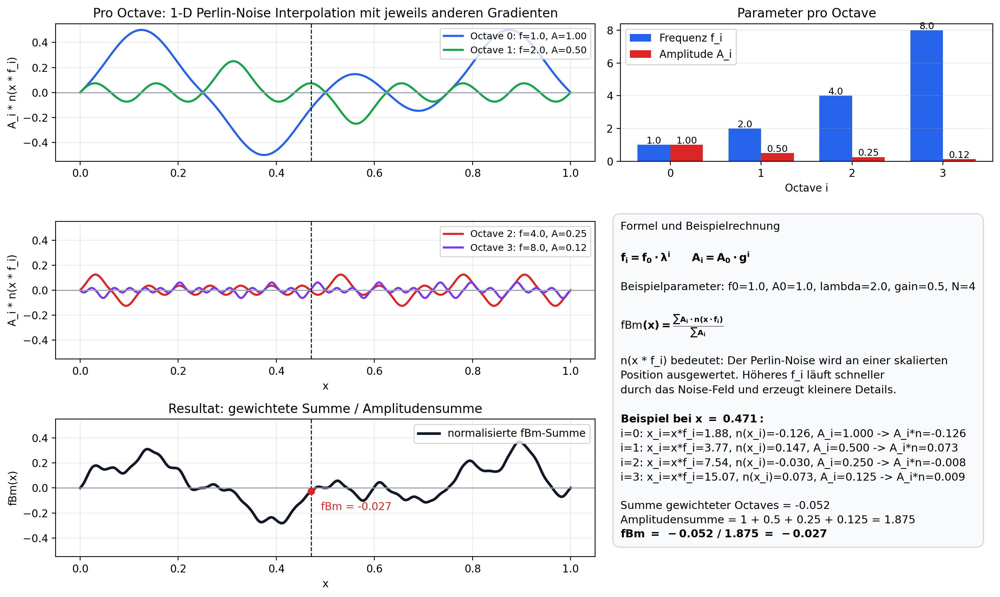
Code-Erklärung
Drei Schritte:
- Für jede Octave ein eigenes Gradientenfeld erzeugen
- Pro Pixel mehrere Perlin-Noise-Werte mit steigender Frequenz berechnen
- Die Octaves mit sinkender Amplitude aufsummieren und normalisieren
function buildOctaveGridsFbm(seed, octaves, width, height, baseFrequency, lacunarity) {
const octaveGrids = []
for (let i = 0; i < octaves; i++) {
const octaveFrequency = baseFrequency * Math.pow(lacunarity, i)
const gridWidth = Math.ceil(width * octaveFrequency) + 2
const gridHeight = Math.ceil(height * octaveFrequency) + 2
const rng = mulberry32Fbm((seed + i) >>> 0)
const grid = buildGradientGridFbm(gridWidth, gridHeight, rng)
octaveGrids.push({
grid,
frequency: octaveFrequency
})
}
return octaveGrids
}buildOctaveGridsFbm erzeugt für jede Octave ein eigenes Gradientenfeld. Die Frequenz wird mit jeder Octave durch lacunarity skaliert. Bei einer lacunarity von 2.0 verdoppelt sich die Frequenz pro Octave.
Der Seed wird für jede Octave leicht verändert:
const rng = mulberry32Fbm((seed + i) >>> 0)Dadurch bleiben alle Ergebnisse reproduzierbar, aber die Octaves verwenden nicht exakt dasselbe Gradientenfeld.
function sampleFbmNoise(x, y, octaveGrids, gain) {
let total = 0
let amplitude = 1
let amplitudeSum = 0
for (let i = 0; i < octaveGrids.length; i++) {
const octave = octaveGrids[i]
const value = samplePerlinNoiseFbm(x, y, octave.grid, octave.frequency)
total += value * amplitude
amplitudeSum += amplitude
amplitude *= gain
}
if (amplitudeSum === 0) {
return 0
}
return total / amplitudeSum
}sampleFbmNoise berechnet für eine Pixelposition den fBm-Wert. Dafür wird jede Octave mit samplePerlinNoiseFbm ausgewertet. Der jeweilige Perlin-Wert wird mit der aktuellen Amplitude gewichtet und zu total addiert.
Nach jeder Octave wird die Amplitude mit gain multipliziert:
amplitude *= gainBei einem gain von 0.5 trägt jede weitere Octave nur noch halb so stark zum Ergebnis bei wie die vorherige. Dadurch bleiben die großflächigen Strukturen dominant, während höhere Frequenzen vor allem feine Details hinzufügen.
Am Ende wird durch amplitudeSum geteilt:
return total / amplitudeSumDadurch bleibt der Wertebereich stabiler, auch wenn die Anzahl der Octaves verändert wird.
function renderFbmNoise(seed, frequency, octaves, lacunarity, gain) {
const octaveGrids = buildOctaveGridsFbm(
seed,
octaves,
width,
height,
frequency,
lacunarity
)
let minValue = Infinity
let maxValue = -Infinity
const values = new Array(width * height)
for (let y = 0; y < height; y++) {
for (let x = 0; x < width; x++) {
const value = sampleFbmNoise(x, y, octaveGrids, gain)
values[y * width + x] = value
minValue = Math.min(minValue, value)
maxValue = Math.max(maxValue, value)
}
}
const range = maxValue - minValue || 1
for (let y = 0; y < height; y++) {
for (let x = 0; x < width; x++) {
const value = values[y * width + x]
const normalized = (value - minValue) / range
const gray = Math.floor(normalized * 255)
// rgba(gray, gray, gray, 255)
}
}
}renderFbmNoise erzeugt zuerst alle Octave-Grids. Danach wird für jedes Canvas-Pixel ein fBm-Wert berechnet. Da die Summe mehrerer Perlin-Werte negative und positive Werte enthalten kann, werden zuerst Minimum und Maximum bestimmt. Anschließend werden alle Werte auf den Bereich von 0 bis 1 normalisiert und als Grauwert dargestellt.
Zusätzlich speichert die Demo die erzeugte fBm-Map in window.generatedNoiseMaps.fbm:
window.generatedNoiseMaps.fbm = {
seed,
frequency,
octaves,
lacunarity,
gain,
width,
height,
rawValues: values,
normalizedValues,
octaveGrids
}Dadurch kann dieselbe Noise-Map später für die Terrain-Demo weiterverwendet werden.
Gib Seed, Frequenz, Octaves, Lacunarity und Gain ein, um eine reproduzierbare fBm Noise Map zu erzeugen.
3.2 Terrain-Generierung aus Noise Maps
In Abschnitt Relevante Noise-Verfahren für Terrain-Generierung wurde gezeigt, wie aus Zufall und Regeln eine Noise-Map erzeugt werden kann. Dieses Kapitel behandelt die nächste Stufe. Aus dem zweidimensionalen Wertefeld entsteht sichtbares Terrain.
3.2.1 Einleitung
Eine fBm-Noise-Map ist ein diskretes 2D-Feld von Skalarwerten (einfachen Zahlenwerten), typischerweise wie im vorigen Kapitel, als Grauwertbild dargestellt. Sie enthält noch keine Geometrie, sondern lediglich die zugrunde liegenden Datenwerte. Geometrische Strukturen wie Vertices, Dreiecke oder Blöcke, aus denen später sichtbare Objekte oder Landschaften aufgebaut werden, entstehen erst während der Weltgenerierung. Erst durch die Interpretation der Werte entstehen Datenrepräsentationen wie Höhenfelder, Dichtefelder oder Texturen. Aus diesen Daten werden anschließend Geometrien erzeugt, die auf der GPU visualisiert werden können.
Dabei ist in zwei Schritten zu unterscheiden:
- Weltgenerierung: Die Noise-Map wird erstellt und ausgewertet. Daraus werden Höhen oder Dichten bestimmt und anschließend Meshes und/oder Blöcke erzeugt.
- Rendering: Die erzeugten Geometrien werden auf dem Bildschirm mit Hilfe der Rendering-Pipeline visualisiert.
Der Schwerpunkt dieses Kapitels liegt auf der Weltgenerierung. Dabei stellt sich die Frage, wie die Werte einer Noise-Map in eine konkrete Repräsentation der Landschaft überführt werden können.
Die folgenden Abschnitte stellen vier verbreitete Methoden der Terrain-Generierung aus Noise-Daten vor:
- Heightmap-Methode: Noise-Werte werden als Höhe \(y = f(x, z)\) interpretiert und als 2D-Heightmap auf ein Mesh überführt.
- Voxel-Density: Jedem Raumpunkt wird ein Dichtewert aus einer 3D-Noise-Funktion zugewiesen. Aus diesen Dichtewerten wird eine Voxel-Struktur erzeugt.
- Voxel-Säulen: Ähnlich zur Heightmap-Methode wird ein 2D-Höhenfeld verwendet, um Voxel-Säulen zu erzeugen.
- Vertex-Displacement: Die Höhe wird parallel im Vertex-Shader aus einer Heightmap-Textur berechnet.
Obwohl sich die Verfahren hinsichtlich ihrer Darstellung und technischen Implementierung unterscheiden, basieren sie auf der selben Grundidee. Für eine gegebene Position wird jeweils ein Noise-Wert bestimmt. Die Unterschiede entstehen erst bei dessen Interpretation.
Alle nachfolgenden Demonstrationen greifen auf dieselbe mathematische Funktion zur Bestimmung der Terrainhöhe zurück. Bei Identischen Parameter unterscheiden sich die Ergebnisse der vorgestellten Verfahren daher nicht durch die zugrunde liegenden Daten, sondern ausschließlich in deren Interpretation und die daraus resultierenden Geometrien.
3.2.2 Von der Noise-Map zur Höhe
Bevor einzelne Verfahren im Detail betrachtet werden, gilt es eine gemeinsame Frage zu klären:
Wie wird aus einem normalisierten Noise-Wert \((v)\) eine konkrete Höhe \((y)\) in Weltkoordinaten?
Grundsätzlich existiert darauf keine allgemeingültige Antwort. Je nach Anwendungsfall kann eine unterschiedliche Funktion, die einen Noise-Wert auf eine Höhe abbildet, als Grundlage für die Terrain-Generierung dienen. In der Praxis sollte eine Höhenfunktion jedoch einige Eigenschaften erfüllen, wie zum Beispiel:
- Stetigkeit: Die Funktion sollte stetig verlaufen, damit keine abrupten Übergänge im Terrain entstehen.
- Steuerbarkeit: Die Parameter sollten leicht steuerbar sein, um die Form des Terrains zu modellieren.
- Effizienz: Die Berechnung sollte effizient ausführbar sein, um lange Generierungszeiten zu vermeiden.
Für die nachfolgenden Demonstrationen wird eine gemeinsame Höhenfunktion verwendet. Sie bildet normalisierte Noise-Werte auf Weltkoordinaten ab und stellt mehrere Parameter zur Steuerung der Terrain-Form bereit. Im Folgenden wird ihre konkrete Umsetzung Schritt für Schritt beschrieben.
3.2.2.1 Die Höhenfunktion
Ausgehend von einem normalisierten Noise-Wert \((v)\) wird die Höhenfunktion als sigmoidale S-Kurve aufgebaut und bildet den Wert direkt auf eine Weltkoordinate \(H(v)\) ab. Die vollständige Funktion lautet:
\[ H(v) = H_{\mathrm{base}} + \left(H_{\mathrm{max}} - H_{\mathrm{base}}\right) \cdot \frac{v^{k}} {v^{k} + \left( \frac{1-H_{\mathrm{level}}}{H_{\mathrm{level}}} \right)(1-v)^{k}}. \]
Zuerst wird der Rohwert auf das Intervall \([0, 1]\) begrenzt:
\[ v = \mathrm{clamp}(v,\, 0,\, 1) \]
Anschließend wird der sigmoidale Anteil der Kurve berechnet. Er bestimmt, wie stark der Noise-Wert in Richtung der Minimal- oder Maximalhöhe übergeht:
\[ s(v) = \frac{v^{k}}{v^{k} + \left(\frac{1 - H_{\mathrm{level}}}{H_{\mathrm{level}}}\right) (1-v)^{k}} \]
Der Parameter Height Curve Exponent (\(k\)) steuert dabei die Stärke der S-Krümmung. Kleinere Werte erzeugen einen flacheren Verlauf, größere Werte einen steileren Übergang mit ausgeprägteren S-Bögen.
Der Parameter Height Level (\(H_{\mathrm{level}}\)) legt den relativen Höhenanteil bei \(v=0{,}5\) fest:
\[ H(0{,}5) = H_{\mathrm{base}} + H_{\mathrm{level}}\cdot\left(H_{\mathrm{max}} - H_{\mathrm{base}}\right) \]
Abschließend werden die Weltkoordinaten durch Base Height (\(H_{\mathrm{base}}\)) und Maximum Height (\(H_{\mathrm{max}}\)) festgelegt. \(H_{\mathrm{base}}\) ist der Höhenwert bei \(v=0\), \(H_{\mathrm{max}}\) der maximal erreichbare Höhenwert bei \(v=1\):
\[ H(v) = H_{\mathrm{base}} + \left(H_{\mathrm{max}} - H_{\mathrm{base}}\right)\cdot s(v) \]
Zusammenfassung der verwendeten Parameter:
| Parameter | Symbol | Wertebereich | Beschreibung |
|---|---|---|---|
| Noise Value | \(v\) | \([0,1]\) | Normalisierter Eingabewert der Funktion |
| Base Height | \(H_{\mathrm{base}}\) | \(\ge 0\) | Höhenwert bei \(v=0\) |
| Maximum Height | \(H_{\mathrm{max}}\) | \(> H_{\mathrm{base}}\) | Maximal erreichbarer Höhenwert bei \(v=1\) |
| Height Curve Exponent | \(k\) | \(> 0\) | Steuert die Stärke der S-Krümmung |
| Height Level | \(H_{\mathrm{level}}\) | \((0,1)\) | Relativer Höhenanteil bei \(v=0{,}5\) |
Damit ergibt sich eine vollständige Abbildung vom Noise-Wert zur finalen Höhe. Die in den folgenden interaktiven Elementen verwendeten Regler verändern die Parameter dieser Funktion und bestimmen somit die Form der resultierenden Höhenfunktion. Die Stellgröße Water Level ist davon unabhängig und steuert nur die Position der Wasseroberfläche in den Darstellungen.
0.00
1.00
1.5
0.50
3.2.2.2 Sampling auf der CPU
Nachdem die Höhenfunktion definiert wurde, stellt sich eine weitere Frage:
Wie wird für einen Vertex oder einen Voxel der passende Noise-Wert bestimmt?
Die Antwort hängt davon ab, wo die Noise-Map gespeichert und ausgewertet wird. Der Vorgang der Bestimmung eines Noicse-Wertes für eine Position wird als Samping bezeichnet und kann sowohl auf der CPU als auch auf der GPU stattfinden. Beide Ansätze verfolgen das selbe Ziel, können sich jedoch in der Art und Weise unterscheiden, wie auf den vorhandenen Noise-Daten zugegriffen wird.
Für die nachfolgenden vorgestellten CPU-basierten Verfahren wird eine gemeinsame Sampling-Strategie verwendet. Sie ordnet einer Position innerhalb des Terrain-Gitters einen Datenpunkt der zugrunde liegenden fBm-Map zu. Im Folgenden wird diese Zuordnung Schritt für Schritt beschrieben.
Dabei liegt die fBm-Map als eindimensionales Array mit einer Auflösung von \(W \times H\) Datenpunkten vor. Das Terrain-Mesh besitzt eine einstellbare Gitterauflösung \(R\). Um die Höhenfunktion für einen Vertex auswerten zu können, muss dessen Position zunächst einem Datenpunkt innerhalb der fBm-Map zugeordnet werden. Für einen Vertex an der Gitterposition \((x, z)\) werden dazu die entsprechenden Koordinaten innerhalb der Noise-Map bestimmt:
\[ i_x = \left\lfloor \frac{x}{R-1} \cdot (W-1) \right\rfloor,\quad i_z = \left\lfloor \frac{z}{R-1} \cdot (H-1) \right\rfloor \]
Anschließend erfolgt die Umrechnung in den linearen Array-Index:
\[ \mathrm{index} = i_z \cdot W + i_x \]
Der an dieser Position gespeicherte Noise-Wert \(v\) wird danach über die zuvor definierte Höhenfunktion in eine Weltkoordinate \(y\) überführt.
Auf der CPU erfolgt der Zugriff diskret, sodass immer der nächstliegende Datenpunkt der fBm-Map verwendet wird. Eine Interpolation zwischen benachbarten Werten findet hier nicht statt. Die Parameter Terrain Resolution bzw. Voxel Resolution steuern dabei ausschließlich die Dichte des erzeugten Gitters und somit wie viele Samples für die Terrain-Generierung verwendet werden. Die Auflösung der verwendeten fBm-Map bleibt davon unberührt.
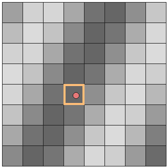
Damit ergibt sich eine vollständige Zuordnung von einer Position innerhalb des Terrain-Gitters zu einem Noise-Wert der fBm-Map. Die nachfolgend vorgestellten CPU-basierten Verfahren verwenden diese gemeinsame Sampling-Strategie als Grundlage zur Erzeugung ihrer jeweiligen Terrain-Repräsentation.
3.2.2.3 Sampling auf der GPU
Im Gegensatz zur CPU-basierten Auswertung werden die fBm-Werte auf der GPU als Graustufen-Textur bereitgestellt und in den Grafikspeicher geladen. Eine Textur besteht dabei, wie in der Vorlesung beschrieben, aus diskret gespeicherten Texeln, deren Werte in mehreren Komponenten (z. B. Grau, RGB oder RGBA) gespeichert werden können. Im Fall der Heightmap wird nur ein einzelner Kanal verwendet, in dem der normalisierte Höhenwert (\(v\)) abgelegt ist.
Die Textur wird über ein orthogonales Koordinatensystem beschrieben. Jedem Vertex eines flachen Ground-Meshes sind Texturkoordinaten zugeordnet, die im normierten Bereich (\([0,1]\)) liegen. Diese sogenannten UV-Koordinaten (\((u,v)\)) bestimmen die Position innerhalb der Textur.
Im Vertex-Shader erfolgt der Zugriff auf die Heightmap über diese Koordinaten:
texture2D(heightMap, uv).rDabei wird der im R-Kanal gespeicherte Höhenwert an der entsprechenden UV-Position ausgelesen. Da die Koordinaten kontinuierlich sind, die Textur jedoch nur diskrete Texel enthält, muss die GPU beim Abtasten zwischen benachbarten Texeln interpolieren.
Standardmäßig kommt auf der Grafikkarte dabei die bilineare Filterung zum Einsatz. Sie sorgt dafür, dass statt eines einzelnen Texels ein geglätteter Wert aus den vier umliegenden Texeln bestimmt wird.
Diese Filterung basiert auf einer zweistufigen linearen Interpolation der vier benachbarten Texel \(T_{00}\), \(T_{10}\), \(T_{01}\) und \(T_{11}\). Die Gewichtung ergibt sich aus den relativen Abständen des Samplepunkts innerhalb der Texelzelle zu deren Mittelpunkten:
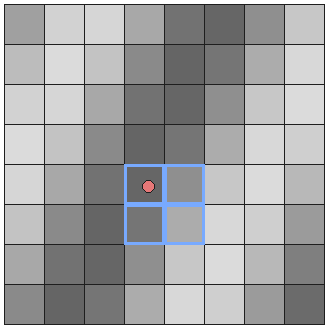
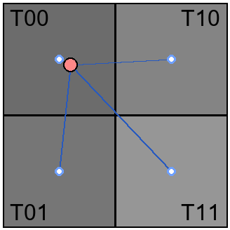
Dabei werden zunächst entlang einer Achse lineare Zwischenwerte berechnet und anschließend entlang der zweiten Achse kombiniert. Das Ergebnis ist der interpolierte Texturwert:
\[ T(u,v) = T_{00}(1-u)(1-v) + T_{10}u(1-v) + T_{01}v(1-u) + T_{11}uv. \]
Dieser Wert stellt den gefilterten Höhenwert der Heightmap an der Position \((u,v)\) dar und wird direkt als Eingabe für die weitere Terrain-Generierung verwendet.
3.2.3 Verfahren auf der CPU
Die vorherigen Abschnitte haben beschrieben, wie für eine Position innerhalb des Terrain-Gitters ein Noise-Wert bestimmt und anschließend über die Höhenfunktion in eine Weltkoordinate überführt wird. Auf dieser Grundlage können verschiedene Verfahren zur Erzeugung einer Terrain-Repräsentation aufgebaut werden.
Bei den nachfolgend vorgestellten CPU-basierten Verfahren erfolgt die Auswertung der Höhenwerte vollständig auf dem Prozessor. Die resultierende Geometrie wird vollständig erzeugt, bevor sie an die GPU übertragen und gerendert wird. Der Vertex-Shader übernimmt dabei lediglich die üblichen Transformationen innerhalb der Rendering-Pipeline.
3.2.3.1 Heightmap-Methode
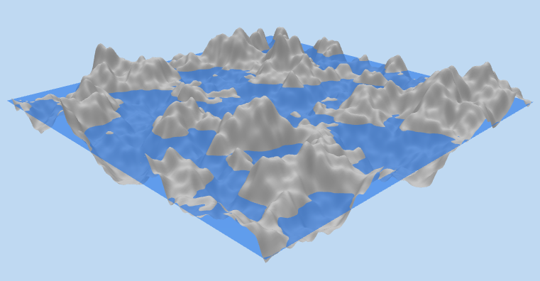
Die Heightmap-Methode gehört zu den am häufigsten verwendeten Verfahren zur Terrain-Generierung aus Noise-Daten. Dabei wird ein zweidimensionaler Noise-Map als Höheninformation interpretiert. Für jede Position \((x,z)\) wird genau ein Höhenwert \((y)\) bestimmt:
\[ \text{Noise}(x,z) \rightarrow y \]
Das resultierende Terrain kann somit als Funktion \(y=f(x,z)\) beschrieben werden. Jeder Position in der horizontalen Ebene \((x,z)\) wird somit genau eine Höhe \((y)\) zugeordnet.
Der grundlegende Gedanke besteht darin, eine Noise-Map als Höhenfeld zu interpretieren. Helle Bereiche (größe Werte) der Noise-Daten entsprechen dabei hohen Geländepunkten, dunkle Bereiche (kleine Werte) niedrigen Geländepunkten. Aus dem zweidimensionalen Wertefeld entsteht dadurch eine dreidimensionale Oberfläche.
3.2.3.1.1 Erzeugung des Terrain-Meshes
Zur Darstellung des Höhenfeldes wird zunächst ein flaches Mesh im \((xz)\)-Raum erzeugt. In der Demonstation wird die Auflösung dieses Gitters durch den Parameter Terrain Resolution (\(R \times R\)) bestimmt.
Jeder Gitterpunkt entspricht einem Vertex des Terrain-Meshes. Für jeden dieser Punkte wird zunächst ein Noise-Wert gesampelt. Anschließend wird dieser Wert durch die Höhenfunktion in eine Weltkoordinate \((y)\) überführt.
Die berechneten Höhenwerte werden anschließend den Vertices des Meshes zugewiesen. Dadurch wird das ursprünglich flache Gitter entlang der Höhenachse verformt und bildet die Oberfläche des Terrains ab.
Zur Darstellung durch die Grafikhardware werden die Vertices, wie in der Vorlesung beschrieben, über Dreiecke miteinander verbunden. Die erzeugte Geometrie wird anschließend an die GPU übertragen und über die Rendering-Pipeline dargestellt.
Der Ablauf lässt sich vereinfacht wie folgt darstellen:
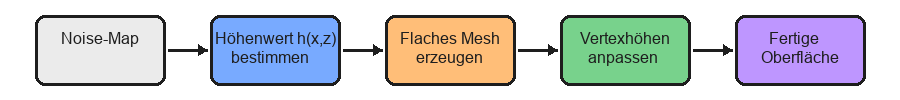
Die folgende Demonstration zeigt die Anwendung der Heightmap-Methode zur Erzeugung einer Terrainoberfläche aus einer Noise-Map:
3.2.3.1.2 Eigenschaften der Methode
Da die Terrainhöhe ausschließlich durch die Funktion \(y=f(x,z)\) beschrieben, kann für jede Position \((x,z)\) nur ein einzelner Höhenwert existieren.
Dies führt zu einer wichtigen Einschränkung der Heightmap-Methode: Strukturen mit mehreren Höhenwerten an der selben Position können nicht dargestellt werden. Dazu gehören insbesondere:
- Höhlen,
- Überhänge,
- natürliche Brücken,
- Tunnel oder
- vertikale Wände mit Rücksprüngen.
Solche Strukturen erfordern die Überlagerung von mehreren Heightmaps mit verschiedenen Noise-Maps oder volumetrische Repräsentationen wie Voxel- oder Dichtefelder, die im weiteren Verlauf vorgestellt werden.
Trotz dieser Einschränkung eignet sich die Heightmap-Methode sehr gut zur Darstellung großflächiger Landschaften wie:
- Ebenen,
- Hügel,
- Gebirgszüge,
- Täler oder
- Küstenlinien.
Die Heightmap-Methode wird in zahlreichen Spielen zur Terrain-Generierung in abgewandelten Formen eingesetzt. Ein bekanntes Beispiel sind frühe Versionen von Minecraft, bei denen die Terrainoberfläche auf einem Höhenfeld basierte.
3.2.3.1.3 Vor- und Nachteile
| Vorteile | Nachteile |
|---|---|
| Einfache mathematische Berechnung | Keine Höhlen oder Überhänge möglich |
| Leicht zu implementieren | Genau ein Höhenwert pro Position \((x,z)\) |
| Geringer Implementierungsaufwand | Detailgrad hängt direkt von der Gitterauflösung ab |
| Effiziente Darstellung großer Landschaften | Speicherbedarf steigt mit der Mesh-Auflösung |
| Gut geeignet für CPU-basierte Generierung | Mesh muss bei Änderungen neu erzeugt werden |
Die Heightmap-Methode stellt damit eine vergleichsweise einfache und effiziente Methode in der Terrain-Generierung dar. Ihre größte Stärke liegt in der Möglichkeit der Darstellung sehr großer Landschaftsoberflächen, während komplexe dreidimensionale Strukturen nur eingeschränkt oder gar nicht abgebildet werden können.
3.2.3.2 Voxel-Density als Volumenmodell
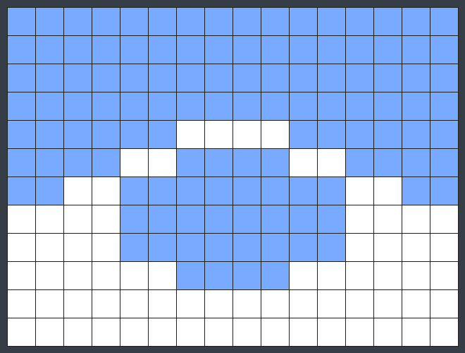
Im Gegensatz zur Heightmap-Methode wird Terrain bei der Voxel-Density-Methode nicht als Oberfläche, sondern als Volumen modelliert. Anstelle eines einzelnen Höhenwertes für jede Position \((x, z)\) erhält jeder Punkt im Raum \((x, y, z)\) einen Dichtewert \(\rho\):
\[ \mathrm{Noise}(x,y,z) \rightarrow \rho \]
Das resultierende Terrain wird somit nicht durch eine Funktion der Form \(y=f(x,z)\) beschrieben. Stattdessen entsteht ein dreidimensionales Dichtefeld, das den gesamten betrachteten Raumbereich umfasst.
Der Ansatz besteht darin, jedem Punkt im Raum \((x, y, z)\) einen Dichtewert \(\rho\) zuzuweisen. Hohe Dichtewerte entsprechen festen Materialien, während niedrige Werte als Luft interpretiert werden. Die sichtbare Terrainoberfläche entsteht an den Übergängen zwischen den Bereichen.
3.2.3.2.1 Erzeugung des Volumenmodells
Um ein Dichtefeld zu erzeugen, wird zunächst für jede Position \((x, y, z)\) ein Noise-Wert einer dreidimensionalen Noise-Map gesampelt. Dieser Wert beschreibt die lokale Materialdichte für einen gegebenen Punkt im Raum und wird innerhalb eines dreidimensionalen Gitters gespeichert.
Da die Verarbeitung des kontinuierlich definierten Raumes nicht effizient möglich ist, erfolgt eine Diskretisierung in einzelne Raumelemente. Diese diskreten Zellen werden als Voxel bezeichnet und bilden die räumliche Struktur des Dichtefeldes. Jedem Voxel wird genau ein Dichtewert \(\rho\) zugeordnet, der den Zustand des entsprechenden Raumbereichs beschreibt.
Anschließend wird eine Schwelle definiert, welche zwischen festem Material und Luft unterscheidet. Die Oberfläche des Terrains entsteht dort, wo das Dichtefeld diese Schwelle überschreitet beziehungsweise unterschreitet. Die entstehende Grenzfläche wird als Isofläche bezeichnet.
Der Ablauf lässt sich vereinfacht wie folgt darstellen:
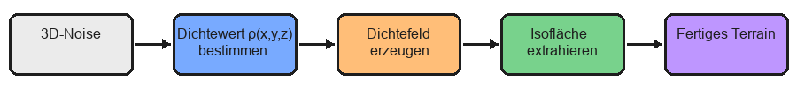
Für größere Landschaften müssen spezielle Verfahren wie Marching Cubes oder Dual Contouring eingesetzt werden, um aus dem Dichtefeld eine zusammenhängende und echtzeit renderbare Oberfläche zu erzeugen. In diesen Methoden werden die Isoflächen aus dem Dichtefeld extrahiert und als Polygonnetz dargestellt.
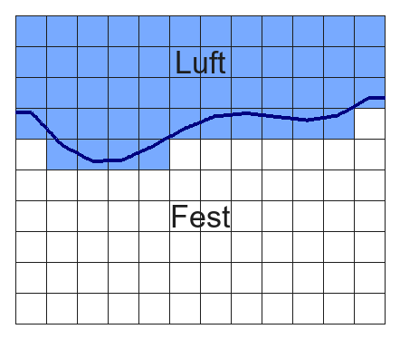
3.2.3.2.2 Eigenschaften der Methode
Da die Terrainrepräsentation auf einem dreidimensionalen Dichtefeld basiert, können mehere Materialschichten entlang der selben Position \((x,z)\) existieren. Dadurch lassen sich komplexere Strukturen darstellen, die bei einer Heightmap nicht möglich sind, wie beispielsweise:
- Höhlen,
- Überhänge,
- natürliche Brücken,
- Tunnel oder
- komplexe Felsformationen.
Die Methode eignet sich daher besonders gut für Spielwelten mit ausgeprägten unterirdischen Strukturen oder stark variierenden Geländeformen.
In der Praxis wird die Methode in angepasster Form in modernen Spielen eingesetzt, um weitläufige Höhlensysteme und komplexe Terrainstrukturen effizient zu erzeugen.
3.2.3.2.3 Vor- und Nachteile
| Vorteile | Nachteile |
|---|---|
| Höhlen und Überhänge möglich | Höherer Speicherbedarf durch 3D-Daten |
| Realistischere unterirdische Strukturen | Höhere Rechenaufwand |
| Mehrere Höhenwerte pro Position \((x,z)\) möglich | Zusätliche Verfahren zur Oberflächenextraktion nötig |
| Flexible Beschreibung komplexer Geometrien | Deutlich höherer Implementierungsaufwand |
Die Voxel-Density-Methode stellt eine leistungsfähige Erweiterung der klassischen Heightmap-Generierung dar. Durch die volumetrische Beschreibung des Terrains können deutlich komplexere Landschaftsstrukturen erzeugt werden. Gleichzeitig erhöhen sich jedoch Speicherbedarf und Verarbeitungsaufwand der Dichtefelder.
3.2.3.3 Voxel-Säulen
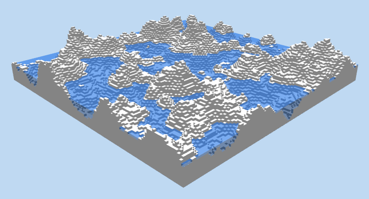
Die Voxel-Säulen-Methode stellt eine diskrete Erweiterung der Heightmap-Methode dar. Beide Verfahren verwenden eine zweidimensionale Noice-Map sowie eine Höhenfunktion zur Bestimmung der Terrainhöhe. Der Unterschied liegt jedoch in der Verwendung des bestimmten Höhenwertes.
Während die Heightmap-Methode ausschließlich die sichtbare Terrainoberfläche beschreibt, wird bei der Voxel-Säulen-Methode, wie der Name bereits vermuten lässt, das Terrain als Menge einzelner Voxel modelliert. Für jede Position \((x,z)\) wird zunächst eine Höhe bestimmt. Anschließend werden alle Raumbereiche unterhalb des Höhenwertes mit Voxelblöcken gefüllt.
Wie bei der Heightmap ergibt sich die Terrainhöhe aus einer Funktion der Form
\[ \text{Noise}(x,z) \rightarrow h \]
Das resultierende Terrain kann damit weiterhin als Funktion
\[ h=f(x,z) \]
beschrieben werden. Im Gegensatz zur Heightmap wird der Höhenwert jedoch nicht direkt zur Positionierung eines Vertices verwendet, sondern zu Erzeugung einer diskreten Blockstruktur benutzt.
Unter Verwendung der Voxelgröße \(s\) kann die Belegung eines Voxels an der Position \((x,y,z)\) durch die Funktion
\[ \operatorname{V}(x,y,z)= \begin{cases} 1, & y \cdot s < \lfloor h(x,z) \rfloor \\ 0, & \text{sonst} \end{cases} \]
beschrieben werden, wobei \(1\) für einen belegten Voxel und \(0\) für einen unbelegten Voxel steht.
Dadurch entsteht eine blockbasierte Volumendarstellung, deren Säulenhöhe aus der Noise-Map bestimmt wird.
3.2.3.3.1 Erzeugung der Voxelstruktur
Zur Erzeugung der Voxelstruktur wird zunächst für jede Position \((x,z)\) die zugehörige Terrainhöhe bestimmt. Diese Höhe definiert die Anzahl der entlang der y-Achse zu erzeugenden Voxelzellen.
Die räumliche Diskretisierung erfolgt dabei über die definierte Voxelgröße \(s\). Sie bestimmt die Kantenlänge eines einzelnen Voxels und legt somit fest, in welche diskreten Raumelemente das Terrain unterteilt wird. Eine kleinere Voxelgröße führt zu einer feineren Auflösung und damit zu einer höheren Anzahl erzeugter Voxel.
Anschließend wird für jede Terrainposition eine vertikale Voxel-Säule erzeugt. Dazu wird für alle Voxelzellen zwischen der Grundebene und der berechneten Terrainhöhe die Position in einer Voxelrepräsentation abgelegt. Mithilfe dieser Informationen kann die Voxelstruktur anschließend durch die Rendering-Pipeline gerendert werden.
Der Ablauf lässt sich vereinfacht wie folgt darstellen:
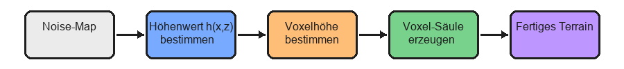
Da die Anzahl der erzeugten Voxel sowohl von der horizontalen Auflösung als auch von der maximalen Terrainhöhe abhängt, wächst der Speicher- und Rechenaufwand mit der Gesamtzahl der erzeugten Blöcke. Im ungünstigsten Fall, also einem soliden Voxelblock über die gesamte Terrainhöhe, ergibt sich ein Aufwand von
\[ O(R^2 \cdot H) \]
mit der Terrainauflösung \(R\) und der maximalen Terrainhöhe \(H\).
Zur Darstellung der Voxelzellen wird in der Demonstration GPU-Instancing verwendet. Dabei wird lediglich ein einzelnes Würfel-Mesh gespeichert und mehrfach mit unterschiedlichen Transformationsdaten gerendert. Dadurch können große Mengen an Voxelblöcken dargestellt werden, ohne für jeden Block eine eigene Geometrie speichern zu müssen.
Die folgende Demonstration soll die Erzeugung der Voxelstruktur aus der Noise-Map und der Höhenfunktion veranschaulichen:
Voxel-Säulen sind deutlich rechenintensiver als Heightmap-Meshes, weil pro Säule viele Block-Instanzen erzeugt werden. Empfehlung: 16×16 oder 32×32 für flüssige Darstellung, 64×64 zum Vergleich, 128×128 nur auf leistungsstarken Geräten.
3.2.3.3.2 Eigenschaften der Methode
Da die Terrainhöhe weiterhin durch eine Funktion der Form
\[ h=f(x,z) \]
beschrieben wird, existiert für jede Position \((x,z)\) genau ein Höhenwert. Die Methode übernimmt damit im Wesentlichen alle Einschränkungen der Heightmap-Methode.
Strukturen wie beispielsweise:
- Höhlen,
- Überhänge,
- natürliche Brücken,
- Tunnel oder
- mehrschichtige Felsformationen
können nicht dargestellt werden.
Im Gegensatz zur Heightmap besitzt die Methode jedoch eine explizite Volumenrepräsentation. Jeder Block existiert als eigenständiges Raumelement und kann unabhängig verändert, entfernt oder ergänzt werden. Dadurch eignet sich das Verfahren besonders für blockartige Spielwelten und interaktive Terrainmanipulationen.
Das Verfahren kann daher als Zwischenform zwischen der klassischen Heightmap-Methode und volumetrischen Verfahren wie der Voxel-Density-Methode betrachtet werden. Es kombiniert die einfache Höhenbestimmung eines Höhenfeldes mit der diskreten Repräsentation von Voxelen.
3.2.3.3.3 Vor- und Nachteile
| Vorteile | Nachteile |
|---|---|
| Einfache Erweiterung der Heightmap-Methode | Keine Höhlen oder Überhänge möglich |
| Intuitive blockbasierte Darstellung | Hoher Speicherbedarf bei großen Terrainhöhen |
| Einzelne Blöcke können direkt verändert werden | Anzahl der Voxel wächst mit der Terrainhöhe |
| Gut geeignet für voxelbasierte Spielwelten | Deutlich mehr Geometrie als bei einer Heightmap |
| Gleiche Höhenfunktion wie bei der Heightmap nutzbar | Detailgrad bleibt an das Höhenfeld gebunden |
Die Voxel-Säulen-Methode stellt einen vergleichsweise einfachen Einstieg in die voxelbasierte Terrain-Generierung dar. Sie verbindet die unkomplizierte Berechnung eines Höhenfeldes mit den Vorteilen einer diskreten Blockrepräsentation. Gleichzeitig übernimmt sie jedoch die Einschränkung der Heightmap-Methode, da weiterhin nur ein Höhenwert pro Position \((x,z)\) existieren kann. Für komplexe dreidimensionale Strukturen sind daher volumetrische Verfahren wie die Voxel-Density-Methode besser geeignet.
3.2.4 Verfahren auf der GPU
Im Gegensatz zu den zuvor vorgestellten CPU-basierten Verfahren erfolgt die Verarbeitung der Terraininformationen bei GPU-Methoden nicht vollständig während der Weltgenerierung auf der CPU. Stattdessen werden vorbereitete Daten oder Ausgangsstrukturen an die Grafikkarte übertragen und dort mithilfe spezialisierter GPU-Programme, insbesondere Shadern, weiterverarbeitet.
Durch die parallele Verarbeitung vieler Daten können große Mengen an Terraininformationen effizient bearbeitet werden. Die konkrete Position innerhalb der Rendering-Pipeline hängt dabei vom jeweiligen Verfahren ab. Während beispielsweise beim Vertex-Displacement-Mapping die Berechnung innerhalb des Vertex-Shaders erfolgt, können andere GPU-Verfahren auf beispielsweise Compute- oder Tessellation-Shader zurückgreifen.
Die nachfolgend vorgestellte Methode verwendet weiterhin die selben Höheninformationen und Parameter wie die zuvor beschriebenen Verfahren. Der Unterschied liegt ausschließlich darin, wann, wo und wie die Höhenberechnung durchgeführt wird.
3.2.4.1 Vertex-Displacement-Mapping
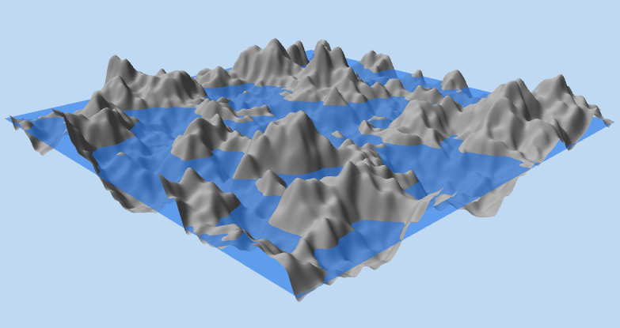
Beim Vertex-Displacement-Mapping wird die aus der Noise-Map berechnete Terrainhöhe nicht bereits während der Weltgenerierung in die Geometrie gespeichert, sondern erst zur Laufzeit in der Rendering-Pipeline auf der GPU bestimmt.
Das Verfahren basiert auf der selben Grundidee wie die zuvor beschriebene Heightmap-Methode. Eine zweidimensionale Noise-Map wird weiterhin als Höheninformation interpretiert und jedem Punkt \((x,z)\) ein Höhenwert zugeordnet:
\[ \mathrm{Noise}(x,z) \rightarrow y \]
Der Unterschied liegt jedoch in dem Zeitpunkt und Ort der Auswertung. Bei der Heightmap-Methode werden die Höhenwerte bereits auf der CPU aus der Noise-Map gesampelt, in Vertexpositionen umgerechnet und anschließend als fertige Terrain an die GPU übergeben. Beim Vertex-Displacement-Mapping hingegen bleibt das Ausgangs-Mesh vollständig unverändert, die Geometrie wird also nicht vorab verändert.
Stattdessen erfolgt die Berechnung der Höhenverschiebung direkt im Vertex-Shader. Hierzu werden die Höheninformationen nicht mehr als Prozessor-generierte Terrain-Geometrie übergeben, sondern zur Laufzeit aus einer Graustufen-Textur auf der Grafikkarte gesampelt. Die Textur ist dabei lediglich eine diskrete Repräsentation der zuvor erzeugten Noise-Daten, welche vor den Rendering-Schritten in den Grafikspeicher geladen wurde.
3.2.4.1.1 Anwendung des Vertex-Displacements
Für die Darstellung des Terrains wird zunächst ein regelmäßiges, flaches Ground-Mesh erzeugt. Dieses Mesh besitzt bereits die gewünschte Auflösung der späteren Terrainoberfläche, enthält jedoch noch keine Höheninformationen. Alle Vertices befinden sich somit anfangs auf einer gemeinsamen Ebene im \((x,z)\)-Raum mit der Höhe \(y_0\).
Jedem Vertex des Meshes werden zusätzlich Textur-Koordinaten zugewiesen. Diese normierten Koordinaten im Bereich \([0,1]\) beschreiben die Position innerhalb der Heightmap-Textur und stellen die Verbindung zwischen Geometrie und gespeicherten Höhenwerten her.
Während der Vertex-Verarbeitung wird diese Zuordnung genutzt, um den zugehörigen Höhenwert direkt aus der Textur zu bestimmen. Der Zugriff erfolgt dabei im Vertex-Shader über die bekannten UV-Koordinaten:
\[ v = \texttt{texture(heightMap, uv).r} \]
Der dabei gelesene Wert \(v\) stammt aus dem R-Kanal der Graustufen-Textur und entspricht einem normalisierten Höhenwert im Bereich \([0,1]\). Wie im Abschnitt Sampling auf der GPU beschrieben, kann dieser Wert durch die GPU bereits zwischen benachbarten Texeln interpoliert werden, sodass keine rein diskrete Abtastung der Heightmap-Textur erfolgt.
Der so erhaltene Texturwert \(v\) wird anschließend als Eingabe für eine Höhenfunktion \(H(v)\) verwendet, welche ihn in eine Weltkoordinate \(y\) projiziert:
\[ y = H(v) \]
Die berechnete Höhe wird direkt auf die y-Komponente der Vertexposition angewendet:
\[ (x,y_0,z) \rightarrow (x,y_0+h,z) \]
Dabei steht \(h\) für die aus dem Heightmap-Wert abgeleitete Höhenverschiebung \(h = H(v) - y_0\). Auf diese Weise wird das ursprünglich flache Grid in eine dreidimensionale Terrainoberfläche überführt.
Der Gesamtablauf lässt sich vereinfacht wie folgt darstellen:
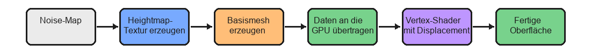
Wie aus der Vorlesung breits bekannt, verändert der Vertex-Shader ausschließlich bereits existierende Vertexpositionen, erzeugt jedoch keine neue Geometrie. Dadurch bleibt die Topologie des ursprünglichen Meshes vollständig erhalten.
Die Anzahl der Vertices sowie der Fragmente entsprechen weiterhin exakt dem Ausgangs-Mesh. Lediglich die Position der Geometrie-Elemente im Raum wird pro Shader-Ausführung neu bestimmt.
Die in der Demonstration verwendete Höhenfunktion ist identisch zur im Abschnitt Von der Noise-Map zur Höhe beschriebenen Funktion. Dadurch bleibt das resultierende Terrain mit den CPU-basierten Verfahren direkt vergleichbar.
Für eine korrekte Beleuchtung der deformierten Oberfläche müssen außerdem geeignete Oberflächennormalen bestimmt werden. In der interaktiven Darstellung werden diese aus benachbarten Höhenwerten der Heightmap mithilfe finiter Differenzen berechnet. Der Fragment-Shader verwendet anschließend diese Normalen für die Beleuchtung der Oberfläche.
Die folgende Veranschaulichung zeigt die Anwendung des Vertex-Displacement-Mappings, welche die selbe Höhenfunktion wie bei der Heightmap-Methode verwendet:
Code-Erklärung: Vertices und UV-Koordinaten
Die UV-Koordinaten eines Babylon.js-Ground-Meshes besitzen nicht die selbe Orientierung wie die erzeugte Heightmap. Daher wird die y-Koordinate vor dem Sampling im Shader invertiert. Ohne diese Korrektur würde das Terrain entlang der y-Achse gespiegelt dargestellt werden.
vec2 fixedUV = vec2(uv.x, 1.0 - uv.y);Code-Erklärung: Normalenberechnung für die Beleuchtung
Da in Babylon.js bei der Verwendung eines ShaderMaterials sowohl ein Vertex- als auch ein Fragment-Shader definiert werden müssen, erfolgt die Berechnung der Oberflächennormalen bereits im Vertex-Shader, da ohne Beleuchtung die Höhenunterschiede der deformierten Terrainoberfläche kaum erkennbar wären und erst durch die Beleuchtung im Fragment-Shader sichtbar werden.
Drei Schritte:
- Benachbarte Höhenwerte sampeln
- Daraus lokale Steigungen bestimmen
- Einen Normalenvektor für die Beleuchtung berechnen
float hL = heightFunction(texture2D(heightMap, fixedUV + vec2(-texelSize, 0.0)).r);
float hR = heightFunction(texture2D(heightMap, fixedUV + vec2( texelSize, 0.0)).r);
float hD = heightFunction(texture2D(heightMap, fixedUV + vec2(0.0, -texelSize)).r);
float hU = heightFunction(texture2D(heightMap, fixedUV + vec2(0.0, texelSize)).r);Für die Berechnung der Oberflächennormalen werden vier benachbarte Heightmap-Werte im Vertex-Shader gesampelt. Aus den Höhenunterschieden können die lokalen Steigungen der Terrainoberfläche bestimmt werden.
vec3 normalObj = normalize(vec3(hL - hR, 2.0 * worldStep, hD - hU));Aus den Steigungen wird anschließend ein Normalenvektor berechnet. Dieser beschreibt die Orientierung der Oberfläche und wird an den Fragment-Shader übergeben.
float diffuse = max(dot(nrm, normalize(-lightDirection)), 0.0);Der Fragment-Shader verwendet die berechnete Normale für eine einfache diffuse Beleuchtung. Dadurch werden Hänge, Kanten und Höhenunterschiede der deformierten Terrainoberfläche deutlich besser sichtbar.
3.2.4.1.2 Eigenschaften der Methode
Da das Verfahren weiterhin auf einem zweidimensionalen Höhenfeld basiert, besitzt jeder Punkt \((x,z)\) weiterhin genau einen Höhenwert. Damit gelten die selben geometrischen Einschränkungen wie bei der Heightmap-Methode.
Strukturen wie beispielsweise:
- Höhlen,
- Überhänge,
- natürliche Brücken,
- Tunnel oder
- mehrschichtige Felsformationen
können daher nicht dargestellt werden.
Der wesentliche Unterschied gegenüber der CPU-basierten Heightmap-Methode liegt in der Verlagerung der Höhenanwendung auf der Grafikkarte. Da viele Vertices parallel verarbeitet werden können, eignet sich das Verfahren besonders gut für große Terrainflächen mit hoher Terrainauflösung.
Gleichzeitig bleibt die Geometrie des Ausgangs-Meshes unverändert. Der Vertex-Shader kann nur vorhandene Vertices verschieben, jedoch keine zusätzlichen Vertices oder Flächen erzeugen. Dadurch ist die Methode auf kontinuierliche Oberflächen beschränkt.
3.2.4.1.3 Vor- und Nachteile
| Vorteile | Nachteile |
|---|---|
| Parallele Berechnung vieler Vertices auf der GPU | Vertex-Shader kann keine neue Geometrie erzeugen |
| Entlastung der CPU bei großen Gittern | Höhere GPU-Auslastung |
| Gleiche Höhenfunktion wie CPU-basierte Verfahren nutzbar | Benötigt Heightmap als GPU-Textur |
| Typisches Verfahren für Echtzeit-fähiges Terrain-Rendering | Keine Höhlen oder Überhänge möglich |
| Geringer Speicheraufwand für Terrain-Geometrie | Unterschiede durch GPU-Sampling möglich |
Das Vertex-Displacement-Mapping stellt damit eine GPU-basierte Alternative zur klassischen Heightmap-Generierung dar. Während die Terrainbeschreibung gleichbleibt, erfolgt die Berechnung der Höhenverschiebung nicht mehr auf der CPU sondern im Vertex-Shader.
Dadurch können große Terrainflächen effizient dargestellt werden, während die Methode gleichzeitig die Einschränkungen eines zweidimensionalen Höhenfeldes beibehält.
3.2.5 Zusammenfassung der Verfahren
Die in diesem Kapitel vorgestellten Verfahren zeigen, dass zwischen einer Noise-Map und einer sichtbaren Landschaft mehrere notwendige Verarbeitungsschritte liegen. Die Noise-Map liefert dabei am Anfang nur ein Feld von Zahlenwerten. Erst durch die Interpretation der Noise-Werte kann eine Terrainoberfläche erzeugt werden.
Jede Methode hat dabei unterschiedliche Eigenschaften und Gründe für ihre Verwendung:
| Aspekt | Heightmap | Voxel-Säulen | Voxel-Density | Vertex-Displacement-Mapping |
|---|---|---|---|---|
| Berechnungsort | CPU | CPU | CPU | Vertex-Shader (GPU) |
| Benötigte Noise-Map | 2D | 2D | 3D | 2D |
| Darstellungsform | Mesh | Voxelstruktur | Voxelstruktur | Deformiertes Mesh |
| Ein Höhenwert pro Position \((x,z)\) | Ja | Ja | Nein | Ja |
| Höhlen und Überhänge | Nein | Nein | Ja | Nein |
| Speicherbedarf | Gering | Mittel bis Hoch | Hoch | Gering |
| Rechenaufwand | Gering | Mittel | Hoch | Geringe CPU-, höhere GPU-Last |
| Typische Stärke | Große Landschaften | Blockbasierte Welten | Komplexe Volumenstrukturen | Echtzeitfähiges Terrain-Rendering |
Obwohl sich die Ansätze hinsichtlich ihrer Darstellung und technischen Umsetzung unterscheiden, verfolgen sie die selben Gedanken: Für eine Position wird ein Noise-Wert bestimmt und anschließend in ein Terrain überführt. Die Unterschiede liegen dabei nicht in den vorhandenen Daten, sondern in deren Verwendung und Darstellung.
Die Wahl der Darstellungsform beeinflusst, welche Landschaftsformen dargestellt werden können, wie hoch der Speicher- und Rechenaufwand ist und an welcher Stelle die Verarbeitung erfolgt. Während höhenfeldbasierte Verfahren vor allem für kontinuierliche Oberflächen geeignet sind, ermöglichen volumetrische Methoden die Beschreibung komplexerer dreidimensionaler Strukturen.
Damit wurden mehrere Wege vorgestellt, mit denen aus einer Noise-Map eine Terraingeometrie erzeugt werden kann. Die erzeugten Meshes oder Voxelstrukturen beschreiben jedoch nur die räumliche Form einer Landschaft. Für die weitere Darstellung müssen diese Geometrien anschließend mit zusätzlichen Oberflächeneigenschaften versehen werden, welche ihr späteres Erscheinungsbild maßgeblich bestimmen.
3.3 Terrain Texturierung mit Texture Maps und Texture Algorithmen
3.3.1 Erklärung und Einordnung in die Rendering Pipeline
Nach der Erzeugung der Terrain-Geometrie durch Heightmaps und deren Darstellung via Vertex-Shadern erfolgt die visuelle Ausgestaltung durch spezialisierte Shader-Stages und Materialzuweisungsalgorithmen. Im Gegensatz zur Geometriegenerierung (CPU oder Tessellation) behandelt dieser Abschnitt die Fragment-Level-Texturierung, also die Bestimmung von Oberflächenfarben und Materialeigenschaften.
3.3.2 Rolle der Tessellation-Shaders im Terrain-Rendering
Im klassischen Rendering-Workflow stellte die CPU oft den zentralen Bottleneck dar: Wollte man ein hochdetailliertes Terrain darstellen, musste die CPU Millionen von Dreiecken generieren und pro Frame an die GPU senden. Dies blockierte wertvolle Bandbreite auf dem PCIe-Bus.
Die Tessellation-Stufe löst dieses Problem, indem sie eine grobe Geometrie (sogenannte Patches) entgegennimmt und diese autonom, hochgradig parallelisiert auf der GPU in feinste Dreiecksnetze zerlegt.
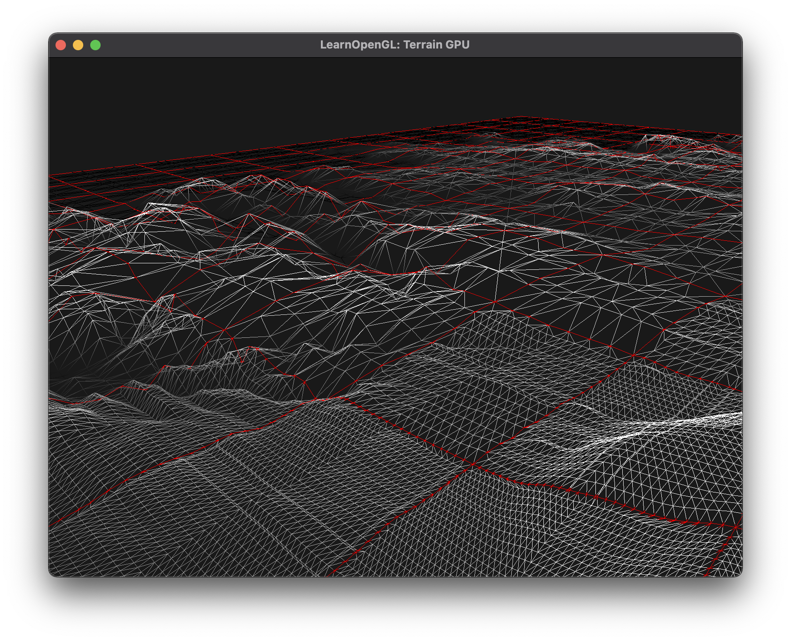
3.3.3 Tessellation Control Shader (TCS) / Hull Shader
Der Tessellation Control Shader (TCS) bildet die Kontrollinstanz dieser Pipeline-Stufe und wird für jeden Kontrollpunkt eines eingehenden Patches ausgeführt.
Relevanz für das Terrain: In dieser Stufe wird das Level of Detail (LoD) dynamisch bestimmt. Dazu berechnet der Shader anhand einer Abstandsfunktion die Distanz zwischen Terrain-Patch und Kamera und passt die Tessellationsfaktoren entsprechend an:
- Nah an der Kamera: Hohe Tessellationsfaktoren für maximale geometrische Detailtreue.
- Weit von der Kamera entfernt: Niedrige Tessellationsfaktoren zur Reduzierung des Rechenaufwands und zur Verbesserung der Performance.
Dadurch werden nur die sichtbaren und relevanten Bereiche des Terrains mit hoher Detailstufe dargestellt, während entfernte Bereiche vereinfacht gerendert werden.
3.3.4 Tessellation Primitive Generator (TPG)
Der Tessellation Primitive Generator (TPG) ist kein programmierbarer Shader, sondern eine fest in der Grafikhardware implementierte Einheit (Fixed-Function Stage).
Hauptaufgabe: Der TPG übernimmt die vom Tessellation Control Shader (TCS) berechneten Tessellationsfaktoren und führt die eigentliche Unterteilung des Patches durch. Dabei erzeugt er ein feines Gitter aus topologischen Primitiven (z. B. Dreiecken oder Quads) innerhalb der ursprünglichen Fläche.
Ausgabe: Für jeden neu erzeugten Vertex berechnet der TPG relative, normierte Koordinaten innerhalb des Patches. Diese werden als baryzentrische Koordinaten bezeichnet und typischerweise in der Form
- \((u, v)\) für quadratische Patches oder
- \((u, v, w)\) für dreieckige Patches
bereitgestellt.
Diese Koordinaten dienen als Eingabe für den nachfolgenden Tessellation Evaluation Shader (TES), der daraus die endgültigen Vertexpositionen im Raum berechnet.
3.3.5 Tessellation Evaluation Shader (TES) / Domain Shader
Der Tessellation Evaluation Shader (TES) ist eine vollständig programmierbare Shader-Stufe und wird für jeden einzelnen vom Tessellation Primitive Generator (TPG) erzeugten Vertex ausgeführt.
Hauptaufgabe: Der TES erhält die vom TPG berechneten baryzentrischen Koordinaten und verwendet diese zur Interpolation der ursprünglichen Kontrollpunkte des Patches. Auf diese Weise wird die endgültige Position jedes neuen Vertex im World- oder Clip-Space berechnet.
Displacement Mapping: In dieser Phase wird die eigentliche Heightmap (Höhentextur) ausgewertet. Die zuvor tessellierte, jedoch noch flache Geometrie wird anhand der Höheninformationen verformt. Dazu verschiebt der Shader jeden Vertex entlang seines Normalenvektors entsprechend dem aus der Heightmap gelesenen Höhenwert.
Die neue Vertexposition ergibt sich aus:
\[ \vec{P}_{\text{neu}} = \vec{P}_{\text{interpoliert}} + \vec{N} \cdot \text{Heightmap}(u,v) \]
wobei
- \(\vec{P}_{\text{interpoliert}}\) die durch Interpolation berechnete Position des Vertex ist,
- \(\vec{N}\) den zugehörigen Normalenvektor beschreibt und
- \(\text{Heightmap}(u,v)\) den Höhenwert an der Texturkoordinate \((u,v)\) liefert.
Durch diese Verschiebung entsteht aus einer einfachen, niedrig aufgelösten Grundfläche ein detailliertes Terrain mit realistischen Höhenstrukturen, ohne dass die Geometrie bereits im Modell gespeichert werden muss.
3.3.6 Vorteile:
- Kontinuierliches Level of Detail (Continuous LoD): Da die Unterteilung pro Frame berechnet wird, erscheinen Geometrien nicht abrupt auf sondern verfeinern sich fließend bei Annäherung.
- Echte geometrische Silhouetten: Im Gegensatz zu reinem Bump- oder Normal-Mapping (welches dem Fragment Shader eine dreidimensionale Struktur nur über Beleuchtungsartefakte simuliert) verändert Tessellation die reale Geometrie. Bergkanten werfen echte Schatten und sind auch bei flachen Blickwinkeln physikalisch zerklüftet.
3.3.7 Nachteile :
- Overtessellation: Wenn Dreiecke durch zu hohe Faktoren kleiner als ein einzelner Pixel auf dem Bildschirm werden, arbeitet die Rasterisierung extrem ineffizient. Die Faktoren müssen daher adaptiv nach oben gedeckelt werden.
- Nahtstellen (Cracking): Wenn zwei benachbarte Patches aufgrund unterschiedlicher Kameraabstände differente Tessellationsfaktoren berechnen, können mathematische Lücken und sichtbare Risse im Terrain entstehen. Der TCS muss algorithmisch sicherstellen, dass gemeinsam genutzte Kanten exakt dieselben Außen-Tessellationsfaktoren zugewiesen bekommen.
** WebGL-Implementierung:** Da WebGL 2.0 (und damit das hier genutzte Babylon.js) nativ keine Tessellation Shader unterstützt, wird dieses Verhalten in Web-Anwendungen meist über hochaufgelöste, vor-unterteilte Geometrien gelöst. In modernen Desktop-APIs (Vulkan, DirectX 12) oder dem kommenden WebGPU-Standard ist die Tessellation-Stufe jedoch der Standardweg für performantes Terrain-Rendering.
3.4 Rolle des Fragment-Shaders in der Terrain-Texturierung
Der Fragment-Shader bildet die finale, programmierbare Stufe der Rendering-Pipeline vor dem Framebuffer-Vorgang. Während vorherige Stufen (Vertex- und Tessellation-Shader) die topologische Struktur des Terrains definieren, operiert der Fragment-Shader auf Pixelebene.
Nach dem Vertex-Shader liegen folgende Informationen vor:
- Vertex-Position (nach GPU-Verschiebung)
- Oberflächennormale (berechnet aus Nachbartexeln)
- UV-Koordinaten (Textur-Mapping)
- Lichtvektoren (Richtung zum Licht)
Der Fragment-Shader nutzt diese Daten, um:
- Materialfarben abhängig von Höhe oder Steigung zu bestimmen
- Diffuse und spekulare Beleuchtung zu berechnen
- Normal Mapping oder andere Oberflächendetails anzuwenden
3.5 Visuelle Darstellung der Terrain Texturierung
3.5.1 Nach Höhe (Height-based Coloring)
Das einfachste und am häufigsten verwendete Verfahren ist die Einfärbung basierend auf der Höhe. Dabei wird der Höhenwert in verschiedene Bereiche unterteilt, wie zum Beispiel:
- Sand: Gelb (Höhe \(15 - 25\))
- Gras: Grün (Höhe \(25 - 40\))
- Felsen: Grau (Höhe \(> 40\))
- Schnee: Weiß (Höhe \(> 50\))
3.5.2 Übergänge zwischen Materialien
Harte Übergänge zwischen den Höhenstufen wirken oft unrealistisch. Daher werden weiche Übergänge eingesetzt:
smoothstep()Sorgt für eine sanfte Interpolation innerhalb eines definierten Höhenbereichs und verhindert harte Kanten.mix()Führt eine lineare Interpolation zwischen zwei Farben oder Materialien basierend auf einem Gewichtungsfaktor durch.
3.5.3 Nach Zeit
Das Day/Night-Shader-System demonstriert, wie die Uniform-Variable timeOfDay den visuellen Eindruck der Terrain-Oberfläche verändert, ohne die Geometrie zu manipulieren. Der Fragmentshader bezieht den Lichtvektorsatz und berechnet diffuse Beleuchtung basierend auf der Oberflächennormalen:
lightDirection = normalize(vec3(cos(time * 2π), sin(time * 2π), -0.3))
diffuse = max(dot(normal, lightDirection), 0.0)
finalColor = materialColor * diffuseDies führt zu dramatischen visuellen Veränderungen: - Mittag (time = 0.25): Licht von vorne → helle, kontrastreich Oberfläche - Sonnenuntergang (time = 0.5): Licht von der Seite → warme, lange Schatten - Nacht (time = 0.75): Licht von hinten → dunkle, mystische Atmosphäre - Sonnenaufgang (time = 1.0): Wiederholung des Lichtwechsels
Praktische Implikation für Echtzeit-Rendering: Kamera und Lichtsystem müssen unabhängig sein. Der Fragment-Shader nutzt nur den Lichtvektorsatz und die Normalen nicht die Kameraposition. Dies ermöglicht freies Kameraschwenken ohne künstliche Lichtverluste.
3.5.4 Vertex-Displacement mit Day/Night-Shader
1.0x
4 Fazit
4.1 Zusammenfassung der Ergebnisse
Die Untersuchung hat gezeigt, dass die prozedurale Terrain-Generierung eine leistungsfähige Methode zur Erzeugung großer und variantenreicher virtueller Welten darstellt. Im Gegensatz zu klassisch gespeicherten Höhen- und Texturdaten werden Landschaften hierbei algorithmisch erzeugt, wodurch sich Speicherbedarf und Datenübertragungsaufwand erheblich reduzieren lassen.
- Generierung einer Noise-Map mittels Compute Shadern
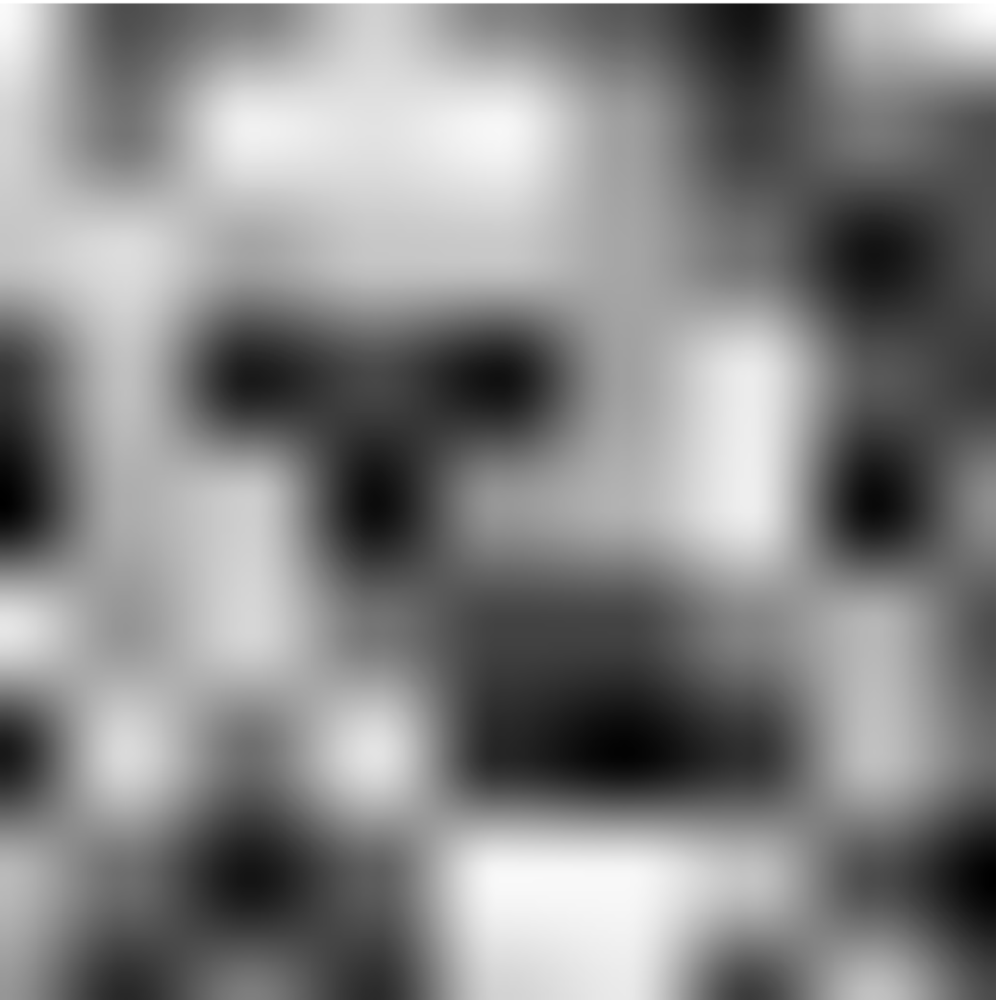
- Umwandlung der Höheninformationen in Geometrie durch Vertex- und Geometry-Shader
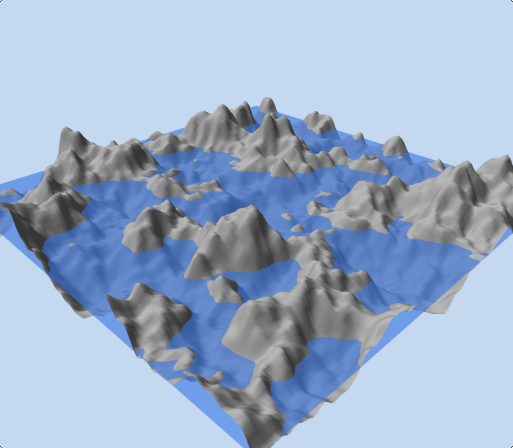
- Texturierung und Verfeinerung durch Fragment-Shader
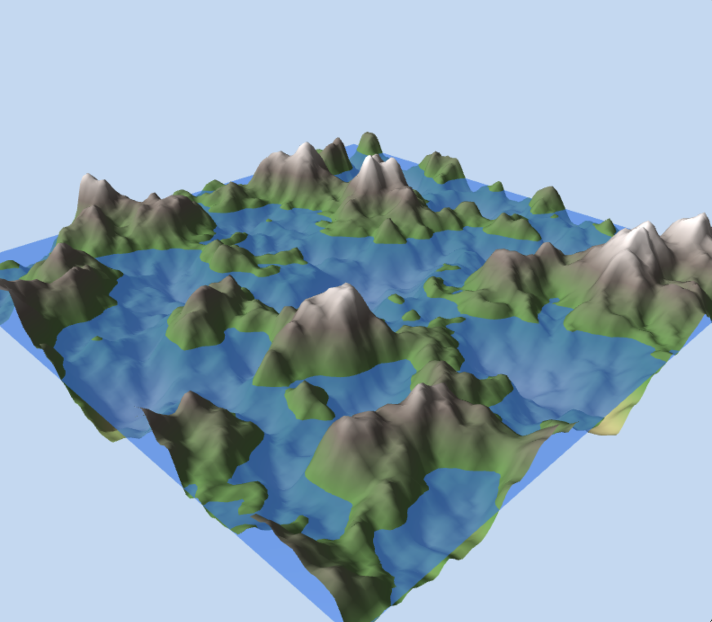
Die Analyse verdeutlicht, dass moderne Grafikhardware die parallele Berechnung großer Datenmengen effizient unterstützt. Insbesondere Compute Shader ermöglichen die schnelle Berechnung komplexer Noise-Funktionen, während die übrigen Shader-Stufen die resultierenden Daten direkt innerhalb der Rendering-Pipeline weiterverarbeiten können.
Darüber hinaus wurde sichtbar, dass die Wahl des verwendeten Noise-Verfahrens einen erheblichen Einfluss auf das Erscheinungsbild des Terrains besitzt. Während einfache Verfahren bereits natürliche Strukturen erzeugen können, liefern komplexere Ansätze wie Perlin- oder Simplex-Noise realistischere und weniger repetitive Landschaften.
4.2 Kritische Einordnung
Trotz der Vorteile existieren auch Einschränkungen. Prozedural erzeugte Landschaften wirken häufig künstlich, wenn ausschließlich mathematische Noise-Funktionen verwendet werden. Natürliche Prozesse wie Erosion, Sedimentablagerung oder Vegetationswachstum werden dabei nicht berücksichtigt.
Zudem besteht ein grundlegender Zielkonflikt zwischen:
- Realismus
- Berechnungsaufwand
- Speicherverbrauch
- Generierungsgeschwindigkeit
Je höher der gewünschte Detailgrad, desto komplexer werden die verwendeten Algorithmen und Shaderprogramme. Besonders bei Echtzeit-Anwendungen müssen daher Kompromisse zwischen visueller Qualität und Performance getroffen werden.
5 Ausblick
5.1 Level of Detail (LOD)
Ein weiteres zentrales Forschungsfeld stellen sogenannte Level-of-Detail-Verfahren (LOD) dar. Hierbei wird die geometrische Komplexität eines Terrains abhängig von der Entfernung zur Kamera angepasst.
- Nahe Bereiche werden mit hoher Polygonanzahl dargestellt.
- Entfernte Bereiche verwenden vereinfachte Geometrie.
- Die verfügbare Rechenleistung kann gezielt auf sichtbare Details konzentriert werden.
In Kombination mit Tessellation Shadern ermöglicht dieser Ansatz eine hohe visuelle Qualität bei gleichzeitig guter Performance.
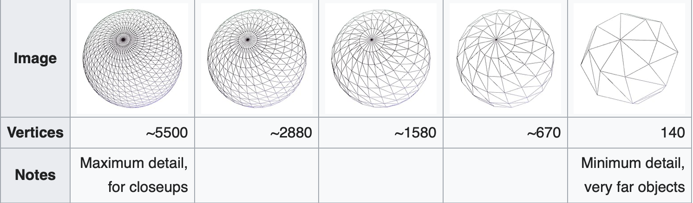
5.2 Simulation natürlicher Prozesse: Wasser- und Erosionssimulation
Während prozedurale Verfahren wie Perlin- oder Simplex-Noise eine statische Landschaftsform erzeugen, wirken natürliche Umgebungen in der Realität stark durch physikalische Prozesse verändert. Besonders Wasser spielt dabei eine zentrale Rolle, da es sowohl Landschaften formt als auch kontinuierlich verändert.
Ein wichtiger Erweiterungsschritt ist die Simulation von Wasserfluss über das Terrain. Dabei wird das Heightmap nicht mehr als statisch betrachtet, sondern als dynamische Oberfläche, über die Wasserpartikel fließen.
Typische vereinfachte Modelle arbeiten dabei mit diskreten Zellen (Grid-basiert):
- Jede Zelle besitzt:
- Höhe des Terrains
- Wassermenge
- Sedimentmenge
Der Simulationsschritt kann vereinfacht so beschrieben werden:
Wasserflussberechnung Wasser fließt von höheren zu niedrigeren Nachbarzellen abhängig vom Höhenunterschied.
Erosion Fließendes Wasser löst Material aus dem Terrain:
- steile Bereiche → starke Erosion
- flache Bereiche → geringe Erosion
Sedimenttransport Das gelöste Material wird mit dem Wasser transportiert.
Ablagerung (Deposition) Wenn die Fließgeschwindigkeit sinkt, wird Sediment wieder abgelagert.
Im Gegensatz zu reinem Noise wirkt das Terrain dadurch „physikalisch plausibel“, da typische geologische Muster nachgebildet werden.
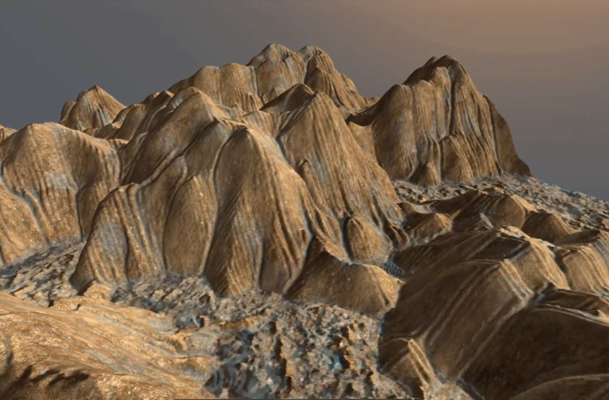
5.3 Machine Learning und hybride Ansätze
5.3.1 Automatische Biome-Generierung aus Heightmaps
Ein konkreter Anwendungsfall für Machine Learning in der prozeduralen Generierung ist die automatische Ableitung von Biomen aus bestehenden Heightmaps.
Während klassische Verfahren Biome meist regelbasiert erzeugen, nutzen ML-Modelle einen datengetriebenen Ansatz, um komplexere und realistischere Verteilungen zu erzeugen.
5.3.2 ML-basierter Ansatz
Ein neuronales Netzwerk wird auf realen geografischen Daten trainiert. Diese Daten enthalten:
- Höheninformationen (Digital Elevation Models)
- Klimadaten (Temperatur, Niederschlag)
- Landbedeckung (Vegetation, Wasser, Gestein)
Das Modell lernt dabei eine Abbildung:
Heightmap + Kontextdaten → Biome-Klassifikation pro Pixel / Region
5.3.3 Ergebnis: Kontinuierliche Biome-Maps
Anstatt diskreter Zonen entstehen weiche, kontinuierliche Übergänge zwischen Biomen.
5.3.4 Integration in die GPU-Pipeline
Der ML-Schritt wird typischerweise nach der Terrain-Generierung, aber vor der finalen Texturierung eingesetzt:
- Compute Shader erzeugt Heightmap (Noise)
- CNN berechnet Biome-Map
- Fragment Shader nutzt Biome-Map für Textur-Mixing
- Finales Rendering kombiniert Höhe + Biome + Licht
5.3.5 Vorteil gegenüber klassischen Methoden
Im Vergleich zu regelbasierten Systemen bietet dieser Ansatz:
- höhere visuelle Vielfalt
- realistischere Übergänge zwischen Landschaftstypen
- bessere Anpassung an komplexe Topologien
- datenbasierte „natürliche“ Verteilungsmuster
6 Referenzen
Procedural Generation with Wave Function Collapse, Vectorized
Procedural Terrain Generation Using Generative Adversarial Networks, Voulgaris et al.
Matrix Multiplication Background User’s Guide, NVIDIA Deep Learning Performance
WebGPU Meets Zero-Knowledge: Can Browser-Based Proving Finally Work, WebGL / WebGPU
The Book of Shaders, Patricio Gonzalez Vivo und Jen Lowe, Kapitel 11
Sharing everything I could understand about gradient noise, bµg
The Book of Shaders, Patricio Gonzalez Vivo und Jen Lowe, Kapitel 13
Tessellation Chapter II: Rendering Terrain using Tessellation Shaders
{kind=link}